Lil'Log 全文中英对照：对比表示学习¶
原文：Contrastive Representation Learning (Lilian Weng, May 2021) 说明：中文为完整译文；英文原文紧随其后以引用块给出。公式与插图保持原文。
对比表示学习的目标，是学习一个嵌入空间：其中相似的样本对在空间中彼此靠近，而不相似的样本对则彼此远离。对比学习既可用于监督设置，也可用于无监督设置。在处理无监督数据时，对比学习是自监督学习中最强大的方法之一。
The goal of contrastive representation learning is to learn such an embedding space in which similar sample pairs stay close to each other while dissimilar ones are far apart. Contrastive learning can be applied to both supervised and unsupervised settings. When working with unsupervised data, contrastive learning is one of the most powerful approaches in self-supervised learning.
对比训练目标¶
EN Contrastive Training Objectives
在对比学习损失函数的早期版本中，每次只涉及一个正样本和一个负样本。近年来训练目标的趋势，是在一个 batch 中纳入多个正样本对与负样本对。
In early versions of loss functions for contrastive learning, only one positive and one negative sample are involved. The trend in recent training objectives is to include multiple positive and negative pairs in one batch.
对比损失¶
EN Contrastive Loss
对比损失（Contrastive loss；Chopra et al. 2005）是最早用于以对比方式做深度度量学习的训练目标之一。
Contrastive loss (Chopra et al. 2005) is one of the earliest training objectives used for deep metric learning in a contrastive fashion.
给定输入样本列表 \(\{ \mathbf{x}_i \}\)，每个样本有对应标签 \(y_i \in \{1, \dots, L\}\)，共 \(L\) 个类别。我们希望学习函数 \(f_\theta(.): \mathcal{X}\to\mathbb{R}^d\)，将 \(x_i\) 编码为嵌入向量，使得同类样本的嵌入相似，而不同类样本的嵌入差异很大。因此，对比损失接收一对输入 \((x_i, x_j)\)：当它们属于同一类时最小化嵌入距离，否则最大化距离。
Given a list of input samples \(\{ \mathbf{x}_i \}\), each has a corresponding label \(y_i \in \{1, \dots, L\}\) among \(L\) classes. We would like to learn a function \(f_\theta(.): \mathcal{X}\to\mathbb{R}^d\) that encodes \(x_i\) into an embedding vector such that examples from the same class have similar embeddings and samples from different classes have very different ones. Thus, contrastive loss takes a pair of inputs \((x_i, x_j)\) and minimizes the embedding distance when they are from the same class but maximizes the distance otherwise.
其中 \(\epsilon\) 是超参数，定义不同类样本之间距离的下界。
where \(\epsilon\) is a hyperparameter, defining the lower bound distance between samples of different classes.
Triplet 损失¶
EN Triplet Loss
Triplet 损失最早在 FaceNet（Schroff et al. 2015）论文中提出，用于学习同一个人在不同姿态与角度下的人脸识别。
Triplet loss was originally proposed in the FaceNet (Schroff et al. 2015) paper and was used to learn face recognition of the same person at different poses and angles.
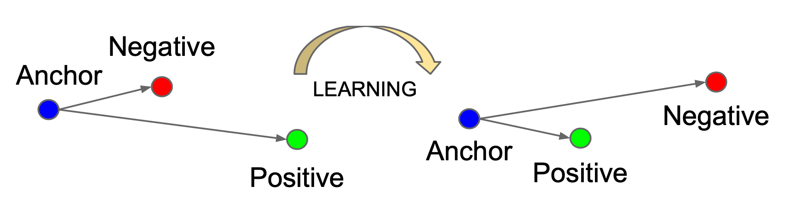
给定一个 anchor 与一个正样本时的 triplet loss 示意。（图片来源：Schroff et al. 2015）
Illustration of triplet loss given one positive and one negative per anchor. (Image source: Schroff et al. 2015)
给定一个 anchor 输入 \(\mathbf{x}\)，我们选取一个正样本 \(\mathbf{x}^+\) 与一个负样本 \(\mathbf{x}^-\)，即 \(\mathbf{x}^+\) 与 \(\mathbf{x}\) 属于同一类，而 \(\mathbf{x}^-\) 从另一类中采样。Triplet 损失同时学习：最小化 anchor \(\mathbf{x}\) 与正样本 \(\mathbf{x}^+\) 之间的距离，并最大化 anchor \(\mathbf{x}\) 与负样本 \(\mathbf{x}^-\) 之间的距离，其形式为：
Given one anchor input \(\mathbf{x}\), we select one positive sample \(\mathbf{x}^+\) and one negative \(\mathbf{x}^-\), meaning that \(\mathbf{x}^+\) and \(\mathbf{x}\) belong to the same class and \(\mathbf{x}^-\) is sampled from another different class. Triplet loss learns to minimize the distance between the anchor \(\mathbf{x}\) and positive \(\mathbf{x}^+\) and maximize the distance between the anchor \(\mathbf{x}\) and negative \(\mathbf{x}^-\) at the same time with the following equation:
其中 margin 参数 \(\epsilon\) 配置为相似对与不相似对之间距离的最小间隔。
where the margin parameter \(\epsilon\) is configured as the minimum offset between distances of similar vs dissimilar pairs.
选择具有挑战性的 \(\mathbf{x}^-\) 对真正提升模型至关重要。
It is crucial to select challenging \(\mathbf{x}^-\) to truly improve the model.
Lifted Structured 损失¶
EN Lifted Structured Loss
Lifted Structured Loss（Song et al. 2015）在一个训练 batch 内利用所有样本对之间的边，以获得更好的计算效率。
Lifted Structured Loss (Song et al. 2015) utilizes all the pairwise edges within one training batch for better computational efficiency.
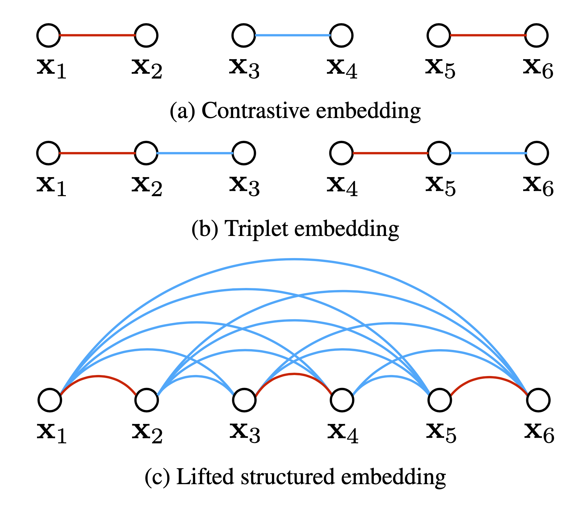
对比损失、triplet 损失与 lifted structured 损失的对比示意。红色与蓝色边分别连接相似与不相似的样本对。（图片来源：Song et al. 2015）
Illustration compares contrastive loss, triplet loss and lifted structured loss. Red and blue edges connect similar and dissimilar sample pairs respectively. (Image source: Song et al. 2015)
令 \(D_{ij} = | f(\mathbf{x}_i) - f(\mathbf{x}_j) |_2\)，结构化损失函数定义为
Let \(D_{ij} = | f(\mathbf{x}_i) - f(\mathbf{x}_j) |_2\), a structured loss function is defined as
其中 \(\mathcal{P}\) 为正样本对集合，\(\mathcal{N}\) 为负样本对集合。注意，稠密的成对平方距离矩阵可以按每个训练 batch 轻松计算。
where \(\mathcal{P}\) contains the set of positive pairs and \(\mathcal{N}\) is the set of negative pairs. Note that the dense pairwise squared distance matrix can be easily computed per training batch.
\(\mathcal{L}_\text{struct}^{(ij)}\) 中的红色部分用于难负例挖掘。然而它并不光滑，实践中可能导致收敛到较差的局部最优。因此将其松弛为：
The red part in \(\mathcal{L}_\text{struct}^{(ij)}\) is used for mining hard negatives. However, it is not smooth and may cause the convergence to a bad local optimum in practice. Thus, it is relaxed to be:
在该论文中，他们还提出：给定少量随机正样本对，通过主动纳入难负样本来提升每个 batch 中负样本的质量。
In the paper, they also proposed to enhance the quality of negative samples in each batch by actively incorporating difficult negative samples given a few random positive pairs.
N-pair 损失¶
EN N-pair Loss
Multi-Class N-pair loss（Sohn 2016）将 triplet 损失推广为与多个负样本进行比较。
Multi-Class N-pair loss (Sohn 2016) generalizes triplet loss to include comparison with multiple negative samples.
给定一个 \((N + 1)\)-元组训练样本 \(\{ \mathbf{x}, \mathbf{x}^+, \mathbf{x}^-_1, \dots, \mathbf{x}^-_{N-1} \}\)，其中包含一个正样本与 \(N-1\) 个负样本，N-pair 损失定义为：
Given a \((N + 1)\)-tuplet of training samples, \(\{ \mathbf{x}, \mathbf{x}^+, \mathbf{x}^-_1, \dots, \mathbf{x}^-_{N-1} \}\), including one positive and \(N-1\) negative ones, N-pair loss is defined as:
若每个类只采样一个负样本，则它等价于多类分类的 softmax 损失。
If we only sample one negative sample per class, it is equivalent to the softmax loss for multi-class classification.
NCE¶
EN NCE
Noise Contrastive Estimation（NCE）是一种估计统计模型参数的方法，由 Gutmann & Hyvarinen 于 2010 年提出。其思路是通过逻辑回归区分目标数据与噪声。可进一步阅读 NCE 如何用于学习词嵌入。
Noise Contrastive Estimation, short for NCE, is a method for estimating parameters of a statistical model, proposed by Gutmann & Hyvarinen in 2010. The idea is to run logistic regression to tell apart the target data from noise. Read more on how NCE is used for learning word embedding here.
令 \(\mathbf{x}\) 为目标样本 \(\sim P(\mathbf{x} \vert C=1; \theta) = p_\theta(\mathbf{x})\)，\(\tilde{\mathbf{x}}\) 为噪声样本 \(\sim P(\tilde{\mathbf{x}} \vert C=0) = q(\tilde{\mathbf{x}})\)。注意，逻辑回归建模的是 logit（即 log-odds）；此处我们希望建模来自目标数据分布而非噪声分布的样本 \(u\) 的 logit：
Let \(\mathbf{x}\) be the target sample \(\sim P(\mathbf{x} \vert C=1; \theta) = p_\theta(\mathbf{x})\) and \(\tilde{\mathbf{x}}\) be the noise sample \(\sim P(\tilde{\mathbf{x}} \vert C=0) = q(\tilde{\mathbf{x}})\). Note that the logistic regression models the logit (i.e. log-odds) and in this case we would like to model the logit of a sample \(u\) from the target data distribution instead of the noise distribution:
经 sigmoid \(\sigma(.)\) 将 logit 转为概率后，可应用交叉熵损失：
After converting logits into probabilities with sigmoid \(\sigma(.)\), we can apply cross entropy loss:
此处列出的是仅含一个正样本与一个噪声样本的 NCE 损失原始形式。在许多后续工作中，纳入多个负样本的对比损失也被广泛称为 NCE。
Here I listed the original form of NCE loss which works with only one positive and one noise sample. In many follow-up works, contrastive loss incorporating multiple negative samples is also broadly referred to as NCE.
InfoNCE¶
EN InfoNCE
CPC（Contrastive Predictive Coding；van den Oord, et al. 2018）中的 InfoNCE 损失受 NCE 启发，使用 categorical 交叉熵损失，在一组无关噪声样本中识别正样本。
The InfoNCE loss in CPC (Contrastive Predictive Coding; van den Oord, et al. 2018), inspired by NCE, uses categorical cross-entropy loss to identify the positive sample amongst a set of unrelated noise samples.
给定上下文向量 \(\mathbf{c}\)，正样本应从条件分布 \(p(\mathbf{x} \vert \mathbf{c})\) 中抽取，而 \(N-1\) 个负样本从 proposal 分布 \(p(\mathbf{x})\) 中抽取，且与上下文 \(\mathbf{c}\) 独立。为简洁起见，将所有样本记为 \(X=\{ \mathbf{x}_i \}^N_{i=1}\)，其中仅有一个 \(\mathbf{x}_\texttt{pos}\) 为正样本。正确识别正样本的概率为：
Given a context vector \(\mathbf{c}\), the positive sample should be drawn from the conditional distribution \(p(\mathbf{x} \vert \mathbf{c})\), while \(N-1\) negative samples are drawn from the proposal distribution \(p(\mathbf{x})\), independent from the context \(\mathbf{c}\). For brevity, let us label all the samples as \(X=\{ \mathbf{x}_i \}^N_{i=1}\) among which only one of them \(\mathbf{x}_\texttt{pos}\) is a positive sample. The probability of we detecting the positive sample correctly is:
其中评分函数为 \(f(\mathbf{x}, \mathbf{c}) \propto \frac{p(\mathbf{x}\vert\mathbf{c})}{p(\mathbf{x})}\)。
where the scoring function is \(f(\mathbf{x}, \mathbf{c}) \propto \frac{p(\mathbf{x}\vert\mathbf{c})}{p(\mathbf{x})}\).
InfoNCE 损失优化正确分类正样本的负对数概率：
The InfoNCE loss optimizes the negative log probability of classifying the positive sample correctly:
\(f(x, c)\) 估计密度比 \(\frac{p(x\vert c)}{p(x)}\) 这一事实，与互信息优化存在联系。为最大化输入 \(x\) 与上下文向量 \(c\) 之间的互信息，有：
The fact that \(f(x, c)\) estimates the density ratio \(\frac{p(x\vert c)}{p(x)}\) has a connection with mutual information optimization. To maximize the the mutual information between input \(x\) and context vector \(c\), we have:
其中蓝色对数项由 \(f\) 估计。
where the logarithmic term in blue is estimated by \(f\).
对于序列预测任务，直接建模未来观测 \(p_k(\mathbf{x}_{t+k} \vert \mathbf{c}_t)\) 可能相当昂贵；CPC 转而建模密度函数，以保留 \(\mathbf{x}_{t+k}\) 与 \(\mathbf{c}_t\) 之间的互信息：
For sequence prediction tasks, rather than modeling the future observations \(p_k(\mathbf{x}_{t+k} \vert \mathbf{c}_t)\) directly (which could be fairly expensive), CPC models a density function to preserve the mutual information between \(\mathbf{x}_{t+k}\) and \(\mathbf{c}_t\):
其中 \(\mathbf{z}_{t+k}\) 为编码后的输入，\(\mathbf{W}_k\) 为可训练权重矩阵。
where \(\mathbf{z}_{t+k}\) is the encoded input and \(\mathbf{W}_k\) is a trainable weight matrix.
Soft-Nearest Neighbors 损失¶
EN Soft-Nearest Neighbors Loss
Soft-Nearest Neighbors Loss（Salakhutdinov & Hinton 2007, Frosst et al. 2019）将其扩展为包含多个正样本。
Soft-Nearest Neighbors Loss (Salakhutdinov & Hinton 2007, Frosst et al. 2019) extends it to include multiple positive samples.
给定一个 batch 的样本 \(\{\mathbf{x}_i, y_i)\}^B_{i=1}\)，其中 \(y_i\) 为 \(\mathbf{x}_i\) 的类标签，以及衡量两个输入相似度的函数 \(f(.,.)\)，温度 \(\tau\) 下的 soft nearest neighbor 损失定义为：
Given a batch of samples, \(\{\mathbf{x}_i, y_i)\}^B_{i=1}\) where \(y_i\) is the class label of \(\mathbf{x}_i\) and a function \(f(.,.)\) for measuring similarity between two inputs, the soft nearest neighbor loss at temperature \(\tau\) is defined as:
温度 \(\tau\) 用于调节表示空间中特征的集中程度。例如，当温度较低时，损失由小距离主导，彼此相距较远的表示贡献很小并变得无关紧要。
The temperature \(\tau\) is used for tuning how concentrated the features are in the representation space. For example, when at low temperature, the loss is dominated by the small distances and widely separated representations cannot contribute much and become irrelevant.
常见设定¶
EN Common Setup
我们可以放宽 soft nearest-neighbor 损失中「类」与「标签」的定义：例如通过对原始样本做数据增强以构造噪声版本，从而从无监督数据中构造正样本对与负样本对。
We can loosen the definition of "classes" and "labels" in soft nearest-neighbor loss to create positive and negative sample pairs out of unsupervised data by, for example, applying data augmentation to create noise versions of original samples.
大多数近期研究遵循如下对比学习目标的定义，以纳入多个正样本与负样本。根据（Wang & Isola 2020）中的设定，令 \(p_\texttt{data}(.)\) 为 \(\mathbb{R}^n\) 上的数据分布，\(p_\texttt{pos}(., .)\) 为 \(\mathbb{R}^{n \times n}\) 上的正样本对分布。这两个分布应满足：
Most recent studies follow the following definition of contrastive learning objective to incorporate multiple positive and negative samples. According to the setup in (Wang & Isola 2020), let \(p_\texttt{data}(.)\) be the data distribution over \(\mathbb{R}^n\) and \(p_\texttt{pos}(., .)\) be the distribution of positive pairs over \(\mathbb{R}^{n \times n}\). These two distributions should satisfy:
- 对称性：\(\forall \mathbf{x}, \mathbf{x}^+, p_\texttt{pos}(\mathbf{x}, \mathbf{x}^+) = p_\texttt{pos}(\mathbf{x}^+, \mathbf{x})\)
- 边缘匹配：\(\forall \mathbf{x}, \int p_\texttt{pos}(\mathbf{x}, \mathbf{x}^+) d\mathbf{x}^+ = p_\texttt{data}(\mathbf{x})\)
- Symmetry: \(\forall \mathbf{x}, \mathbf{x}^+, p_\texttt{pos}(\mathbf{x}, \mathbf{x}^+) = p_\texttt{pos}(\mathbf{x}^+, \mathbf{x})\)
- Matching marginal: \(\forall \mathbf{x}, \int p_\texttt{pos}(\mathbf{x}, \mathbf{x}^+) d\mathbf{x}^+ = p_\texttt{data}(\mathbf{x})\)
为学习编码器 \(f(\mathbf{x})\) 以得到 L2 归一化的特征向量，对比学习目标为：
To learn an encoder \(f(\mathbf{x})\) to learn a L2-normalized feature vector, the contrastive learning objective is:
关键要素¶
EN Key Ingredients
大规模数据增强¶
EN Heavy Data Augmentation
给定一个训练样本，需要采用数据增强技术为其创建噪声版本，作为正样本输入损失函数。恰当的数据增强设置对于学习良好且可泛化的嵌入特征至关重要。它在不修改语义含义的前提下，向样本引入非本质变化，从而鼓励模型学习表示中的本质部分。例如，SimCLR 的实验表明，随机裁剪与随机颜色扰动的组合对于学习图像视觉表示的良好性能至关重要。
Given a training sample, data augmentation techniques are needed for creating noise versions of itself to feed into the loss as positive samples. Proper data augmentation setup is critical for learning good and generalizable embedding features. It introduces the non-essential variations into examples without modifying semantic meanings and thus encourages the model to learn the essential part of the representation. For example, experiments in SimCLR showed that the composition of random cropping and random color distortion is crucial for good performance on learning visual representation of images.
大批量大小¶
EN Large Batch Size
在训练中使用大批量大小是许多对比学习方法（如 SimCLR、CLIP）成功的另一关键要素，尤其当方法依赖批内负例时。只有当批量足够大，损失函数才能覆盖足够多样化的负样本集合，对模型形成足够挑战，从而学习有意义的表示以区分不同样本。
Using a large batch size during training is another key ingredient in the success of many contrastive learning methods (e.g. SimCLR, CLIP), especially when it relies on in-batch negatives. Only when the batch size is big enough, the loss function can cover a diverse enough collection of negative samples, challenging enough for the model to learn meaningful representation to distinguish different examples.
难负例挖掘¶
EN Hard Negative Mining
难负样本应与锚样本具有不同标签，但其嵌入特征与锚嵌入非常接近。在有监督数据集中可访问真实标签时，识别任务相关的难负例较为容易。例如，在学习句子嵌入时，可将 NLI 数据集中标注为「矛盾」的句子对视为难负例对（如 SimCSE），或将 BM25 返回的、关键词匹配最多但排序靠前的错误候选作为难负样本（DPR；Karpukhin et al., 2020）。
Hard negative samples should have different labels from the anchor sample, but have embedding features very close to the anchor embedding. With access to ground truth labels in supervised datasets, it is easy to identify task-specific hard negatives. For example when learning sentence embedding, we can treat sentence pairs labelled as "contradiction" in NLI datasets as hard negative pairs (e.g. SimCSE, or use top incorrect candidates returned by BM25 with most keywords matched as hard negative samples (DPR; Karpukhin et al., 2020).
然而，若希望保持无监督设定，难负例挖掘会变得棘手。增大训练批量或记忆库规模会隐式引入更多难负例，但也会带来大内存占用的副作用。
However, it becomes tricky to do hard negative mining when we want to remain unsupervised. Increasing training batch size or memory bank size implicitly introduces more hard negative samples, but it leads to a heavy burden of large memory usage as a side effect.
Chuang 等人（2020）研究了对比学习中的采样偏差，并提出了去偏损失。在无监督设定下，由于不知道真实标签，我们可能意外采样到假负例。采样偏差可导致显著的性能下降。
Chuang et al. (2020) studied the sampling bias in contrastive learning and proposed debiased loss. In the unsupervised setting, since we do not know the ground truth labels, we may accidentally sample false negative samples. Sampling bias can lead to significant performance drop.
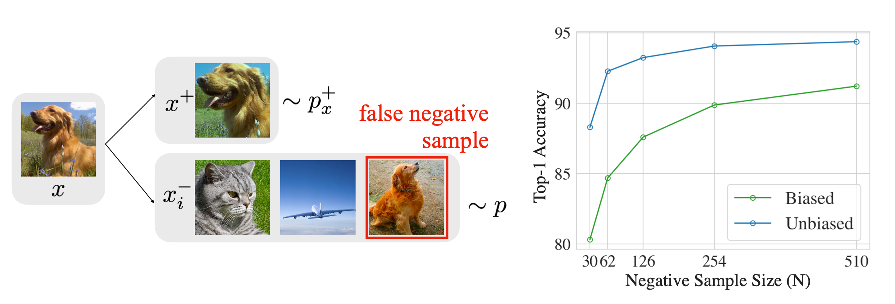
对比学习中的采样偏差指假负例，可导致显著性能下降。（图源：Chuang et al., 2020）
Sampling bias which refers to false negative samples in contrastive learning can lead to a big performance drop. (Image source: Chuang et al., 2020)
假设锚类别 \(c\) 的概率均匀为 \(\rho(c)=\eta^+\)，观察到不同类别的概率为 \(\eta^- = 1-\eta^+\)。
Let us assume the probability of anchor class \(c\) is uniform \(\rho(c)=\eta^+\) and the probability of observing a different class is \(\eta^- = 1-\eta^+\).
- 对于 \(\mathbf{x}\)，观察到正例的概率为 \(p^+_x(\mathbf{x}')=p(\mathbf{x}'\vert \mathbf{h}_{x'}=\mathbf{h}_x)\)；
- 对于 \(\mathbf{x}\)，得到负样本的概率为 \(p^-_x(\mathbf{x}')=p(\mathbf{x}'\vert \mathbf{h}_{x'}\neq\mathbf{h}_x)\)。
- The probability of observing a positive example for \(\mathbf{x}\) is \(p^+_x(\mathbf{x}')=p(\mathbf{x}'\vert \mathbf{h}_{x'}=\mathbf{h}_x)\);
- The probability of getting a negative sample for \(\mathbf{x}\) is \(p^-_x(\mathbf{x}')=p(\mathbf{x}'\vert \mathbf{h}_{x'}\neq\mathbf{h}_x)\).
当采样 \(\mathbf{x}^-\) 时，我们无法访问真实的 \(p^-_x(\mathbf{x}^-)\)，因此 \(\mathbf{x}^-\) 可能以概率 \(\eta^+\) 从（不希望的）锚类别 \(c\) 中采样。实际采样数据分布变为：
When we are sampling \(\mathbf{x}^-\) , we cannot access the true \(p^-_x(\mathbf{x}^-)\) and thus \(\mathbf{x}^-\) may be sampled from the (undesired) anchor class \(c\) with probability \(\eta^+\). The actual sampling data distribution becomes:
因此，采样 \(\mathbf{x}^-\) 时可用 \(p^-_x(\mathbf{x}') = (p(\mathbf{x}') - \eta^+ p^+_x(\mathbf{x}'))/\eta^-\) 对损失去偏。给定从 \(p\) 采样的 \(N\) 个样本 \(\{\mathbf{u}_i\}^N_{i=1}\) 以及从 \(p^+_x\) 采样的 \(M\) 个样本 \(\{ \mathbf{v}_i \}_{i=1}^M\)，可估计对比学习损失分母中第二项 \(\mathbb{E}_{\mathbf{x}^-\sim p^-_x}[\exp(f(\mathbf{x})^\top f(\mathbf{x}^-))]\) 的期望：
Thus we can use \(p^-_x(\mathbf{x}') = (p(\mathbf{x}') - \eta^+ p^+_x(\mathbf{x}'))/\eta^-\) for sampling \(\mathbf{x}^-\) to debias the loss. With \(N\) samples \(\{\mathbf{u}_i\}^N_{i=1}\) from \(p\) and \(M\) samples \(\{ \mathbf{v}_i \}_{i=1}^M\) from \(p^+_x\) , we can estimate the expectation of the second term \(\mathbb{E}_{\mathbf{x}^-\sim p^-_x}[\exp(f(\mathbf{x})^\top f(\mathbf{x}^-))]\) in the denominator of contrastive learning loss:
其中 \(\tau\) 为温度，\(\exp(-1/\tau)\) 是 \(\mathbb{E}_{\mathbf{x}^-\sim p^-_x}[\exp(f(\mathbf{x})^\top f(\mathbf{x}^-))]\) 的理论下界。
where \(\tau\) is the temperature and \(\exp(-1/\tau)\) is the theoretical lower bound of \(\mathbb{E}_{\mathbf{x}^-\sim p^-_x}[\exp(f(\mathbf{x})^\top f(\mathbf{x}^-))]\).
最终的去偏对比损失为：
The final debiased contrastive loss looks like:
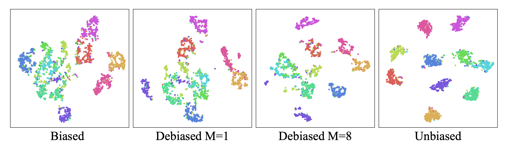
去偏对比学习所学表示的 t-SNE 可视化。（图源：Chuang et al., 2020）
t-SNE visualization of learned representation with debiased contrastive learning. (Image source: Chuang et al., 2020)
在上述记号基础上，Robinson 等人（2021）修改采样概率，通过按与锚样本的相似度对 \(p^-_x(x')\) 加权，以针对难负例。新的采样概率 \(q_\beta(x^-)\) 为：
Following the above annotation, Robinson et al. (2021) modified the sampling probabilities to target at hard negatives by up-weighting the probability \(p^-_x(x')\) to be proportional to its similarity to the anchor sample. The new sampling probability \(q_\beta(x^-)\) is:
其中 \(\beta\) 为待调超参数。
where \(\beta\) is a hyperparameter to tune.
我们可用重要性采样估计分母中的第二项 \(\mathbb{E}_{\mathbf{x}^- \sim q_\beta} [\exp(f(\mathbf{x})^\top f(\mathbf{x}^-))]\)，其中配分函数 \(Z_\beta\)、\(Z^+_\beta\) 均可经验估计。
We can estimate the second term in the denominator \(\mathbb{E}_{\mathbf{x}^- \sim q_\beta} [\exp(f(\mathbf{x})^\top f(\mathbf{x}^-))]\) using importance sampling where both the partition functions \(Z_\beta, Z^+_\beta\) can be estimated empirically.
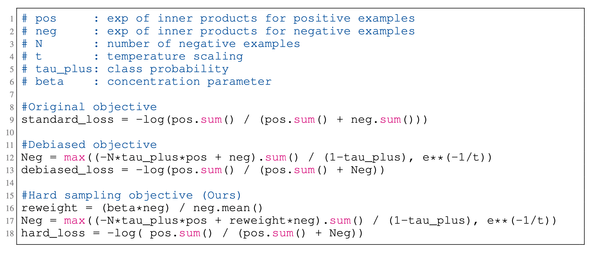
在 \(M=1\) 时计算 NCE 损失、去偏对比损失与难负样本目标的伪代码。（图源：Robinson et al., 2021）
Pseudo code for computing NCE loss, debiased contrastive loss, and hard negative sample objective when setting \(M=1\). (Image source: Robinson et al., 2021)
视觉：图像嵌入¶
EN Vision: Image Embedding
图像增强¶
EN Image Augmentations
视觉领域的大多数对比表示学习方法依赖对样本施加一系列数据增强以创建噪声版本。增强应显著改变视觉外观，但保持语义含义不变。
Most approaches for contrastive representation learning in the vision domain rely on creating a noise version of a sample by applying a sequence of data augmentation techniques. The augmentation should significantly change its visual appearance but keep the semantic meaning unchanged.
基础图像增强¶
EN Basic Image Augmentation
在保留语义含义的前提下修改图像的方式很多。可使用下列任一增强，或多种操作的组合。
There are many ways to modify an image while retaining its semantic meaning. We can use any one of the following augmentation or a composition of multiple operations.
- 随机裁剪，再 resize 回原始尺寸。
- 随机颜色扰动
- 随机高斯模糊
- 随机颜色抖动
- 随机水平翻转
- 随机灰度转换
- 多裁剪增强：使用两个标准分辨率裁剪，并额外采样一组仅覆盖图像小区域的低分辨率裁剪。低分辨率裁剪降低计算成本。（SwAV）
- 以及更多……
- Random cropping and then resize back to the original size.
- Random color distortions
- Random Gaussian blur
- Random color jittering
- Random horizontal flip
- Random grayscale conversion
- Multi-crop augmentation: Use two standard resolution crops and sample a set of additional low resolution crops that cover only small parts of the image. Using low resolution crops reduces the compute cost. (SwAV)
- And many more …
增强策略¶
EN Augmentation Strategies
许多框架用于学习良好的数据增强策略（即多种变换的组合）。以下是若干常见方法。
Many frameworks are designed for learning good data augmentation strategies (i.e. a composition of multiple transforms). Here are a few common ones.
- AutoAugment（Cubuk, et al. 2018）：受 NAS 启发，AutoAugment 将学习图像分类最佳数据增强操作（如剪切、旋转、反色等）的问题建模为 RL 问题，并搜索在验证集上准确率最高的组合。
- RandAugment（Cubuk et al., 2019）：RandAugment 用单一幅度参数控制不同变换操作的强度，大幅缩小 AutoAugment 的搜索空间。
- PBA（Population based augmentation；Ho et al., 2019）：PBA 将 PBT（Jaderberg et al, 2017）与 AutoAugment 结合，用进化算法并行训练一群体子模型以演化最佳增强策略。
- UDA（Unsupervised Data Augmentation；Xie et al., 2019）：在一组候选增强策略中，UDA 选择使无标签样本与其无标签增强版本上预测分布之间 KL 散度最小的策略。
- AutoAugment(Cubuk, et al. 2018): Inspired by NAS, AutoAugment frames the problem of learning best data augmentation operations (i.e. shearing, rotation, invert, etc.) for image classification as an RL problem and looks for the combination that leads to the highest accuracy on the evaluation set.
- RandAugment (Cubuk et al., 2019): RandAugment greatly reduces the search space of AutoAugment by controlling the magnitudes of different transformation operations with a single magnitude parameter.
- PBA (Population based augmentation; Ho et al., 2019): PBA combined PBT (Jaderberg et al, 2017) with AutoAugment, using the evolutionary algorithm to train a population of children models in parallel to evolve the best augmentation strategies.
- UDA (Unsupervised Data Augmentation; Xie et al., 2019): Among a set of possible augmentation strategies, UDA selects those to minimize the KL divergence between the predicted distribution over an unlabelled example and its unlabelled augmented version.
图像混合¶
EN Image Mixture
图像混合方法可从现有数据点构造新的训练样本。
Image mixture methods can construct new training examples from existing data points.
- Mixup（Zhang et al., 2018）：在全局层面混合，对两张已有图像 \(I_1\) 和 \(I_2\) 做逐像素加权组合：\(I_\text{mixup} \gets \alpha I_1 + (1-\alpha) I_2\)，其中 \(\alpha \in [0, 1]\)。
- Cutmix（Yun et al., 2019）：在区域层面混合，将一张图像的局部区域与另一张图像的其余部分组合生成新样本：\(I_\text{cutmix} \gets \mathbf{M}_b \odot I_1 + (1-\mathbf{M}_b) \odot I_2\)，其中 \(\mathbf{M}_b \in \{0, 1\}^I\) 为二值掩码，\(\odot\) 为逐元素乘法。等价于用另一张图像的同一区域填充 cutout（DeVries & Taylor 2017）区域。
- MoCHi（「Mixing of Contrastive Hard Negatives」；Kalantidis et al. 2020）：给定查询 \(\mathbf{q}\)，MoCHi 维护 \(K\) 个负特征的队列 \(Q=\{\mathbf{n}_1, \dots, \mathbf{n}_K \}\)，并按与查询的相似度 \(\mathbf{q}^\top \mathbf{n}\) 降序排序。队列中前 \(N\) 项视为最难负例 \(Q^N\)。合成难例可生成为 \(\mathbf{h} = \tilde{\mathbf{h}} / |\tilde{\mathbf{h}}|\)，其中 \(\tilde{\mathbf{h}} = \alpha\mathbf{n}_i + (1-\alpha) \mathbf{n}_j\)，\(\alpha \in (0, 1)\)。还可通过与查询特征混合得到更难样本：\(\mathbf{h}' = \tilde{\mathbf{h}'} / |\tilde{\mathbf{h}'}|_2\)，其中 \(\tilde{\mathbf{h}'} = \beta\mathbf{q} + (1-\beta) \mathbf{n}_j\)，\(\beta \in (0, 0.5)\)。
- Mixup (Zhang et al., 2018): It runs global-level mixture by creating a weighted pixel-wise combination of two existing images \(I_1\) and \(I_2\): \(I_\text{mixup} \gets \alpha I_1 + (1-\alpha) I_2\) and \(\alpha \in [0, 1]\).
- Cutmix (Yun et al., 2019): Cutmix does region-level mixture by generating a new example by combining a local region of one image with the rest of the other image. \(I_\text{cutmix} \gets \mathbf{M}_b \odot I_1 + (1-\mathbf{M}_b) \odot I_2\), where \(\mathbf{M}_b \in \{0, 1\}^I\) is a binary mask and \(\odot\) is element-wise multiplication. It is equivalent to filling the cutout (DeVries & Taylor 2017) region with the same region from another image.
- MoCHi ("Mixing of Contrastive Hard Negatives"; Kalantidis et al. 2020): Given a query \(\mathbf{q}\), MoCHi maintains a queue of \(K\) negative features \(Q=\{\mathbf{n}_1, \dots, \mathbf{n}_K \}\) and sorts these negative features by similarity to the query, \(\mathbf{q}^\top \mathbf{n}\), in descending order. The first \(N\) items in the queue are considered as the hardest negatives, \(Q^N\). Then synthetic hard examples can be generated by \(\mathbf{h} = \tilde{\mathbf{h}} / |\tilde{\mathbf{h}}|\) where \(\tilde{\mathbf{h}} = \alpha\mathbf{n}_i + (1-\alpha) \mathbf{n}_j\) and \(\alpha \in (0, 1)\). Even harder examples can be created by mixing with the query feature, \(\mathbf{h}' = \tilde{\mathbf{h}'} / |\tilde{\mathbf{h}'}|_2\) where \(\tilde{\mathbf{h}'} = \beta\mathbf{q} + (1-\beta) \mathbf{n}_j\) and \(\beta \in (0, 0.5)\).
并行增强¶
EN Parallel Augmentation
该类方法对一张锚图像产生两个噪声版本，并学习使这两个增强样本共享相同嵌入的表示。
This category of approaches produce two noise versions of one anchor image and aim to learn representation such that these two augmented samples share the same embedding.
SimCLR¶
EN SimCLR
SimCLR（Chen et al, 2020）提出了一个用于对比学习视觉表示的简单框架。它通过在潜空间中用对比损失最大化同一样本不同增强视图之间的一致性，来学习视觉输入的表示。
SimCLR (Chen et al, 2020) proposed a simple framework for contrastive learning of visual representations. It learns representations for visual inputs by maximizing agreement between differently augmented views of the same sample via a contrastive loss in the latent space.
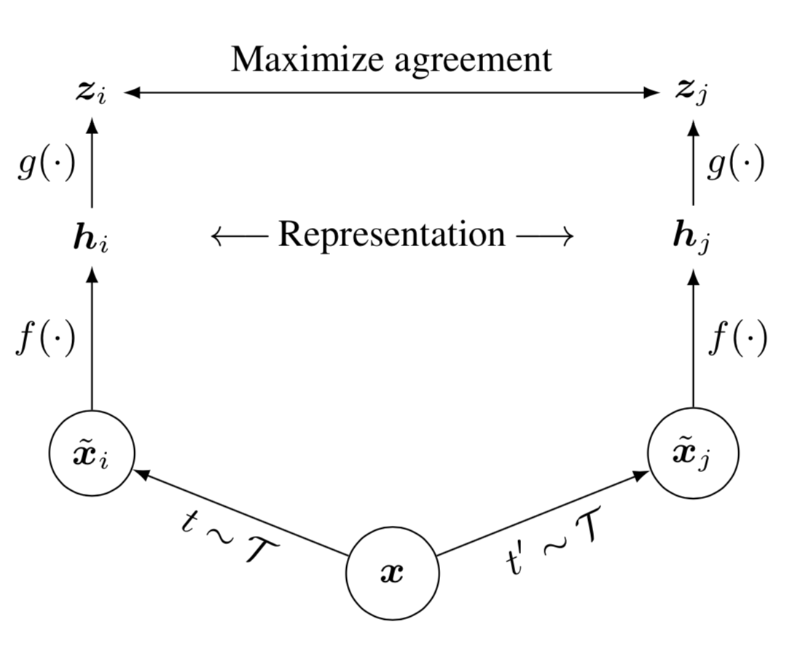
用于对比学习视觉表示的简单框架。（图源：Chen et al, 2020）
A simple framework for contrastive learning of visual representations. (Image source: Chen et al, 2020)
- 随机采样大小为 \(N\) 的小批量，每个样本施加两种不同的数据增强，共得到 \(2N\) 个增强样本。
- Randomly sample a minibatch of \(N\) samples and each sample is applied with two different data augmentation operations, resulting in \(2N\) augmented samples in total.
其中两个独立的数据增强算子 \(t\) 和 \(t'\) 从同一增强族 \(\mathcal{T}\) 中采样。数据增强包括随机裁剪、带随机翻转的 resize、颜色扰动与高斯模糊。
where two separate data augmentation operators, \(t\) and \(t'\), are sampled from the same family of augmentations \(\mathcal{T}\). Data augmentation includes random crop, resize with random flip, color distortions, and Gaussian blur.
- 给定一对正样本，其余 \(2(N-1)\) 个数据点作为负样本。表示由基编码器 \(f(.)\) 产生：
- Given one positive pair, other \(2(N-1)\) data points are treated as negative samples. The representation is produced by a base encoder \(f(.)\):
- 对比学习损失用余弦相似度 \(\text{sim}(.,.)\) 定义。注意损失作用在表示的额外投影层 \(g(.)\) 上，而非直接作用在表示空间；但下游任务仅使用表示 \(\mathbf{h}\)。
- The contrastive learning loss is defined using cosine similarity \(\text{sim}(.,.)\). Note that the loss operates on an extra projection layer of the representation \(g(.)\) rather than on the representation space directly. But only the representation \(\mathbf{h}\) is used for downstream tasks.
其中 \(\mathbb{1}_{[k \neq i]}\) 为指示函数：\(k\neq i\) 时为 1，否则为 0。
where \(\mathbb{1}_{[k \neq i]}\) is an indicator function: 1 if \(k\neq i\) 0 otherwise.
SimCLR 需要大批量以纳入足够负样本，才能获得良好性能。
SimCLR needs a large batch size to incorporate enough negative samples to achieve good performance.
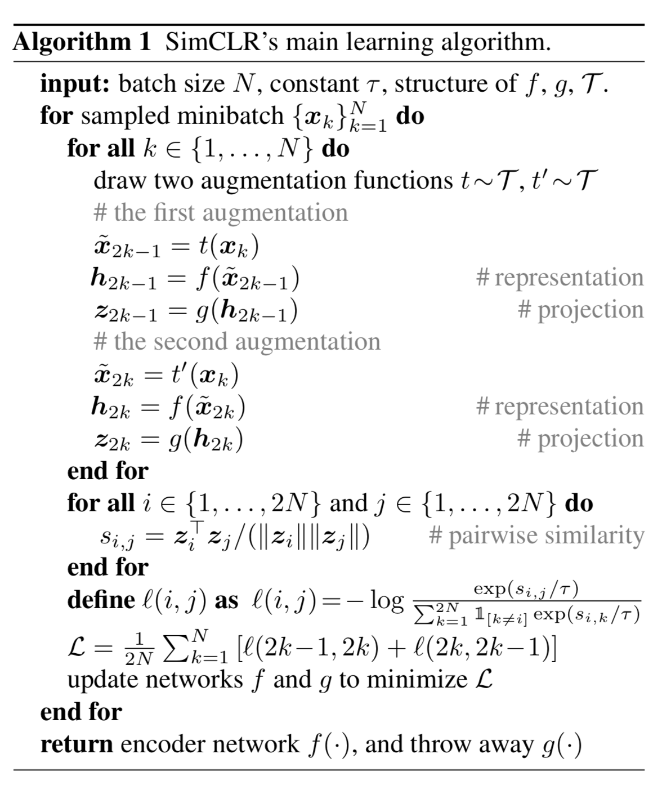
SimCLR 算法。（图源：Chen et al, 2020）
The algorithm for SimCLR. (Image source: Chen et al, 2020).
Barlow Twins¶
EN Barlow Twins
Barlow Twins（Zbontar et al. 2021）将同一样本的两个失真版本输入同一网络提取特征，并学习使两组输出特征之间的互相关矩阵接近单位阵。目标是使同一样本不同失真版本的表示向量相似，同时最小化这些向量之间的冗余。
Barlow Twins (Zbontar et al. 2021) feeds two distorted versions of samples into the same network to extract features and learns to make the cross-correlation matrix between these two groups of output features close to the identity. The goal is to keep the representation vectors of different distorted versions of one sample similar, while minimizing the redundancy between these vectors.
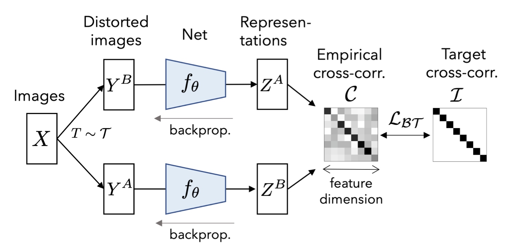
Barlow Twins 学习流程示意。（图源：Zbontar et al. 2021）
Illustration of Barlow Twins learning pipeline. (Image source: Zbontar et al. 2021).
设 \(\mathcal{C}\) 为沿批量维度在两个相同网络输出之间计算的互相关矩阵。\(\mathcal{C}\) 为方阵，大小与特征网络输出维度相同。矩阵中每个元素 \(\mathcal{C}_{ij}\) 为网络输出向量在索引 \(i, j\) 与批量索引 \(b\) 处 \(\mathbf{z}_{b,i}^A\) 与 \(\mathbf{z}_{b,j}^B\) 的余弦相似度，取值在 -1（完全反相关）到 1（完全相关）之间。
Let \(\mathcal{C}\) be a cross-correlation matrix computed between outputs from two identical networks along the batch dimension. \(\mathcal{C}\) is a square matrix with the size same as the feature network's output dimensionality. Each entry in the matrix \(\mathcal{C}_{ij}\) is the cosine similarity between network output vector dimension at index \(i, j\) and batch index \(b\), \(\mathbf{z}_{b,i}^A\) and \(\mathbf{z}_{b,j}^B\), with a value between -1 (i.e. perfect anti-correlation) and 1 (i.e. perfect correlation).
Barlow Twins 在自监督学习上与 SOTA 方法具有竞争力。它自然避免平凡常数解（即表示坍缩），且对不同训练批量大小具有鲁棒性。
Barlow Twins is competitive with SOTA methods for self-supervised learning. It naturally avoids trivial constants (i.e. collapsed representations), and is robust to different training batch sizes.
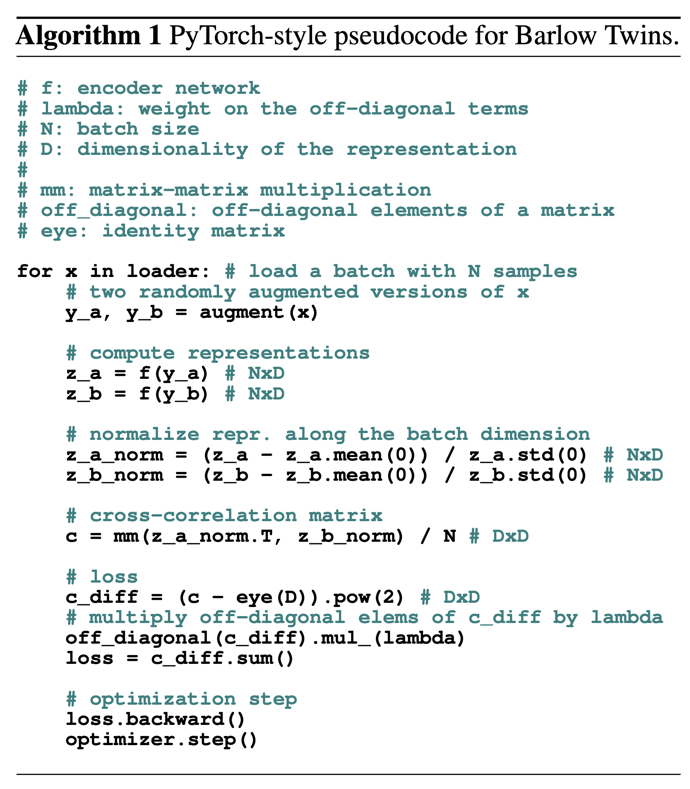
Barlow Twins 的 Pytorch 风格伪代码算法。（图源：Zbontar et al. 2021）
Algorithm of Barlow Twins in Pytorch style pseudo code. (Image source: Zbontar et al. 2021).
BYOL¶
EN BYOL
与上述方法不同，有趣的是，BYOL（Bootstrap Your Own Latent；Grill, et al 2020）声称在不使用负样本的情况下达到新的 SOTA 结果。它依赖两个神经网络——在线网络与目标网络——相互交互并彼此学习。目标网络（参数 \(\xi\)）与在线网络（参数 \(\theta\)）架构相同，但权重为 Polyak 平均：\(\xi \leftarrow \tau \xi + (1-\tau) \theta\)。
Different from the above approaches, interestingly, BYOL (Bootstrap Your Own Latent; Grill, et al 2020) claims to achieve a new state-of-the-art results without using negative samples. It relies on two neural networks, referred to as online and target networks that interact and learn from each other. The target network (parameterized by \(\xi\)) has the same architecture as the online one (parameterized by \(\theta\)), but with polyak averaged weights, \(\xi \leftarrow \tau \xi + (1-\tau) \theta\).
目标是学习可用于下游任务的表示 \(y\)。参数为 \(\theta\) 的在线网络包含：
The goal is to learn a presentation \(y\) that can be used in downstream tasks. The online network parameterized by \(\theta\) contains:
- 编码器 \(f_\theta\)；
- 投影器 \(g_\theta\)；
- 预测器 \(q_\theta\)。
- An encoder \(f_\theta\);
- A projector \(g_\theta\);
- A predictor \(q_\theta\).
目标网络架构相同，但参数为 \(\xi\)，通过 Polyak 平均 \(\theta\) 更新：\(\xi \leftarrow \tau \xi + (1-\tau) \theta\)。
The target network has the same network architecture, but with different parameter \(\xi\), updated by polyak averaging \(\theta\): \(\xi \leftarrow \tau \xi + (1-\tau) \theta\).
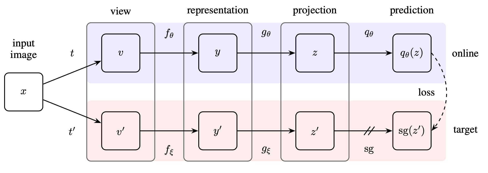
BYOL 模型架构。训练后仅使用 \(f_\theta\) 产生表示 \(y=f_\theta(x)\)，其余模块丢弃。\(\text{sg}\) 表示 stop gradient。（图源：Grill, et al 2020）
The model architecture of BYOL. After training, we only care about \(f_\theta\) for producing representation, \(y=f_\theta(x)\), and everything else is discarded. \(\text{sg}\) means stop gradient. (Image source: Grill, et al 2020)
给定图像 \(\mathbf{x}\)，BYOL 损失构造如下：
Given an image \(\mathbf{x}\), the BYOL loss is constructed as follows:
- 创建两个增强视图：\(\mathbf{v}=t(\mathbf{x}); \mathbf{v}'=t'(\mathbf{x})\)，增强 \(t \sim \mathcal{T}, t' \sim \mathcal{T}'\) 采样；
- 编码为表示：\(\mathbf{y}_\theta=f_\theta(\mathbf{v}), \mathbf{y}'=f_\xi(\mathbf{v}')\)；
- 投影到潜变量：\(\mathbf{z}_\theta=g_\theta(\mathbf{y}_\theta), \mathbf{z}'=g_\xi(\mathbf{y}')\)；
- 在线网络输出预测 \(q_\theta(\mathbf{z}_\theta)\)；
- 对 \(q_\theta(\mathbf{z}_\theta)\) 与 \(\mathbf{z}'\) 做 L2 归一化，得 \(\bar{q}_\theta(\mathbf{z}_\theta) = q_\theta(\mathbf{z}_\theta) / | q_\theta(\mathbf{z}_\theta) |\) 与 \(\bar{\mathbf{z}'} = \mathbf{z}' / |\mathbf{z}'|\)；
- 损失 \(\mathcal{L}^\text{BYOL}_\theta\) 为 L2 归一化预测 \(\bar{q}_\theta(\mathbf{z})\) 与 \(\bar{\mathbf{z}'}\) 之间的 MSE；
- 对称损失 \(\tilde{\mathcal{L}}^\text{BYOL}_\theta\) 可通过交换 \(\mathbf{v}'\) 与 \(\mathbf{v}\) 得到，即将 \(\mathbf{v}'\) 送入在线网络、\(\mathbf{v}\) 送入目标网络；
- 最终损失为 \(\mathcal{L}^\text{BYOL}_\theta + \tilde{\mathcal{L}}^\text{BYOL}_\theta\)，仅优化参数 \(\theta\)。
- Create two augmented views: \(\mathbf{v}=t(\mathbf{x}); \mathbf{v}'=t'(\mathbf{x})\) with augmentations sampled \(t \sim \mathcal{T}, t' \sim \mathcal{T}'\);
- Then they are encoded into representations, \(\mathbf{y}_\theta=f_\theta(\mathbf{v}), \mathbf{y}'=f_\xi(\mathbf{v}')\);
- Then they are projected into latent variables, \(\mathbf{z}_\theta=g_\theta(\mathbf{y}_\theta), \mathbf{z}'=g_\xi(\mathbf{y}')\);
- The online network outputs a prediction \(q_\theta(\mathbf{z}_\theta)\);
- Both \(q_\theta(\mathbf{z}_\theta)\) and \(\mathbf{z}'\) are L2-normalized, giving us \(\bar{q}_\theta(\mathbf{z}_\theta) = q_\theta(\mathbf{z}_\theta) / | q_\theta(\mathbf{z}_\theta) |\) and \(\bar{\mathbf{z}'} = \mathbf{z}' / |\mathbf{z}'|\);
- The loss \(\mathcal{L}^\text{BYOL}_\theta\) is MSE between L2-normalized prediction \(\bar{q}_\theta(\mathbf{z})\) and \(\bar{\mathbf{z}'}\);
- The other symmetric loss \(\tilde{\mathcal{L}}^\text{BYOL}_\theta\) can be generated by switching \(\mathbf{v}'\) and \(\mathbf{v}\); that is, feeding \(\mathbf{v}'\) to online network and \(\mathbf{v}\) to target network.
- The final loss is \(\mathcal{L}^\text{BYOL}_\theta + \tilde{\mathcal{L}}^\text{BYOL}_\theta\) and only parameters \(\theta\) are optimized.
与多数基于对比学习的流行方法不同，BYOL 不使用负样本对。多数自举方法依赖伪标签或簇索引，而 BYOL 直接自举潜表示。
Unlike most popular contrastive learning based approaches, BYOL does not use negative pairs. Most bootstrapping approaches rely on pseudo-labels or cluster indices, but BYOL directly boostrapps the latent representation.
在没有负样本的情况下 BYOL 仍能工作良好，相当有趣且令人惊讶。后来我读到 Abe Fetterman 与 Josh Albrecht 的一篇博文，他们在复现 BYOL 时强调了两点意外发现：
It is quite interesting and surprising that without negative samples, BYOL still works well. Later I ran into this post by Abe Fetterman & Josh Albrecht, they highlighted two surprising findings while they were trying to reproduce BYOL:
- 去掉批归一化后，BYOL 通常不比随机更好。
- 批归一化的存在隐式带来一种对比学习形式。他们认为使用负样本对避免模型坍缩（即：若对每个数据点都用全零表示会怎样？）很重要。批归一化隐式注入对负样本的依赖，因为无论一批输入多相似，数值都会被重分布（展开为 \(\sim \mathcal{N}(0, 1\))），从而防止模型坍缩。若你从事该方向，强烈建议阅读全文。
- BYOL generally performs no better than random when batch normalization is removed.
- The presence of batch normalization implicitly causes a form of contrastive learning. They believe that using negative samples is important for avoiding model collapse (i.e. what if you use all-zeros representation for every data point?). Batch normalization injects dependency on negative samples inexplicitly because no matter how similar a batch of inputs are, the values are re-distributed (spread out \(\sim \mathcal{N}(0, 1\)) and therefore batch normalization prevents model collapse. Strongly recommend you to read the full article if you are working in this area.
记忆库¶
EN Memory Bank
在每个批次中为大量负样本计算嵌入代价极高。常见做法是将表示存入记忆库，以数据陈旧性换取更低计算成本。
Computing embeddings for a large number of negative samples in every batch is extremely expensive. One common approach is to store the representation in memory to trade off data staleness for cheaper compute.
带记忆库的实例判别¶
EN Instance Discrimination with Memoy Bank
实例对比学习（Wu et al, 2018）将类级监督推向极端，把每个实例视为独立的一类，意味着「类别」数与训练集样本数相同。因此无法训练具有如此多头的 softmax 层，而可用 NCE 近似。
Instance contrastive learning (Wu et al, 2018) pushes the class-wise supervision to the extreme by considering each instance as a distinct class of its own. It implies that the number of "classes" will be the same as the number of samples in the training dataset. Hence, it is unfeasible to train a softmax layer with these many heads, but instead it can be approximated by NCE.
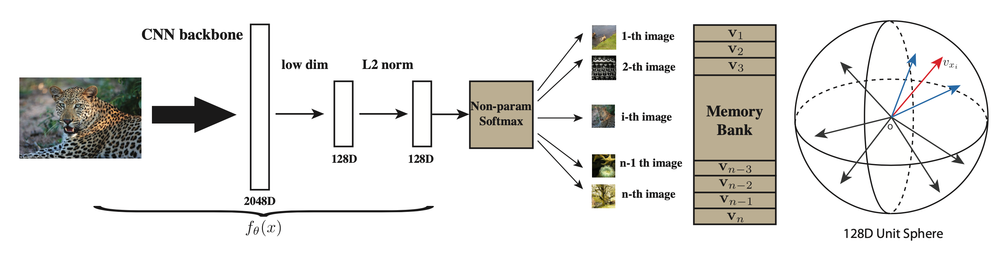
实例级对比学习的训练流程。所学嵌入经 L2 归一化。（图源：Wu et al, 2018）
The training pipeline of instance-level contrastive learning. The learned embedding is L2-normalized. (Image source: Wu et al, 2018)
设 \(\mathbf{v} = f_\theta(x)\) 为待学习的嵌入函数，向量归一化为 \(|\mathbf{v}|=1\)。非参数分类器以温度 \(\tau\) 预测样本 \(\mathbf{v}\) 属于类 \(i\) 的概率：
Let \(\mathbf{v} = f_\theta(x)\) be an embedding function to learn and the vector is normalized to have \(|\mathbf{v}|=1\). A non-parametric classifier predicts the probability of a sample \(\mathbf{v}\) belonging to class \(i\) with a temperature parameter \(\tau\):
为避免每次都计算所有样本的表示，他们实现 Memory Bank，在数据库中存储过去迭代的样本表示。设 \(V=\{ \mathbf{v}_i \}\) 为记忆库，\(\mathbf{f}_i = f_\theta(\mathbf{x}_i)\) 为网络前向得到的特征。比较成对相似度时，可用记忆库中的 \(\mathbf{v}_i\) 替代网络前向的 \(\mathbf{f}_i\)。
Instead of computing the representations for all the samples every time, they implement an Memory Bank for storing sample representation in the database from past iterations. Let \(V=\{ \mathbf{v}_i \}\) be the memory bank and \(\mathbf{f}_i = f_\theta(\mathbf{x}_i)\) be the feature generated by forwarding the network. We can use the representation from the memory bank \(\mathbf{v}_i\) instead of the feature forwarded from the network \(\mathbf{f}_i\) when comparing pairwise similarity.
分母理论上需要访问所有样本的表示，但实践中代价过高。可用随机子集 \(\{j_k\}_{k=1}^M\) 的 Monte Carlo 近似：
The denominator theoretically requires access to the representations of all the samples, but that is too expensive in practice. Instead we can estimate it via Monte Carlo approximation using a random subset of \(M\) indices \(\{j_k\}_{k=1}^M\).
由于每类仅一个实例，训练不稳定且波动大。为平滑训练，他们在基于近端优化的方法上为正样本引入额外项。最终 NCE 损失目标为：
Because there is only one instance per class, the training is unstable and fluctuates a lot. To improve the training smoothness, they introduced an extra term for positive samples in the loss function based on the proximal optimization method. The final NCE loss objective looks like:
其中 \(\{ \mathbf{v}^{(t-1)} \}\) 为记忆库中上一迭代的嵌入。迭代间差异 \(|\mathbf{v}^{(t)}_i - \mathbf{v}^{(t-1)}_i|^2_2\) 随嵌入收敛而逐渐消失。
where \(\{ \mathbf{v}^{(t-1)} \}\) are embeddings stored in the memory bank from the previous iteration. The difference between iterations \(|\mathbf{v}^{(t)}_i - \mathbf{v}^{(t-1)}_i|^2_2\) will gradually vanish as the learned embedding converges.
MoCo 与 MoCo-V2¶
EN MoCo & MoCo-V2
Momentum Contrast（MoCo；He et al, 2019）提供无监督学习视觉表示的框架，将动态字典检索结构化。字典为数据样本编码表示的大型 FIFO 队列。
Momentum Contrast (MoCo; He et al, 2019) provides a framework of unsupervised learning visual representation as a dynamic dictionary look-up. The dictionary is structured as a large FIFO queue of encoded representations of data samples.
给定查询样本 \(\mathbf{x}_q\)，经编码器得到查询表示 \(\mathbf{q} = f_q(\mathbf{x}_q)\)。字典中的键表示列表 \(\{\mathbf{k}_1, \mathbf{k}_2, \dots \}\) 由动量编码器编码：\(\mathbf{k}_i = f_k (\mathbf{x}^k_i)\)。假设其中仅有一个正键 \(\mathbf{k}^+\) 与 \(\mathbf{q}\) 匹配。论文中对 \(\mathbf{x}_q\) 做不同增强的噪声副本得到 \(\mathbf{k}^+\)。然后在 1 个正样本与 \(N-1\) 个负样本上使用温度 \(\tau\) 的 InfoNCE 对比损失：
Given a query sample \(\mathbf{x}_q\), we get a query representation through an encoder \(\mathbf{q} = f_q(\mathbf{x}_q)\). A list of key representations \(\{\mathbf{k}_1, \mathbf{k}_2, \dots \}\) in the dictionary are encoded by a momentum encoder \(\mathbf{k}_i = f_k (\mathbf{x}^k_i)\). Let's assume among them there is a single positive key \(\mathbf{k}^+\) in the dictionary that matches \(\mathbf{q}\). In the paper, they create \(\mathbf{k}^+\) using a noise copy of \(\mathbf{x}_q\) with different augmentation. Then the InfoNCE contrastive loss with temperature \(\tau\) is used over one positive and \(N-1\) negative samples:
与记忆库相比，MoCo 的基于队列的字典可复用紧邻前几个 mini-batch 的表示。
Compared to the memory bank, a queue-based dictionary in MoCo enables us to reuse representations of immediately preceding mini-batches of data.
MoCo 字典作为队列不可微，因此不能靠反向传播更新键编码器 \(f_k\)。朴素做法是对 \(f_q\) 与 \(f_k\) 使用同一编码器。MoCo 则提出用动量系数 \(m \in [0, 1)\) 的动量更新。设 \(f_q\)、\(f_k\) 参数分别为 \(\theta_q\)、\(\theta_k\)：
The MoCo dictionary is not differentiable as a queue, so we cannot rely on back-propagation to update the key encoder \(f_k\). One naive way might be to use the same encoder for both \(f_q\) and \(f_k\). Differently, MoCo proposed to use a momentum-based update with a momentum coefficient \(m \in [0, 1)\). Say, the parameters of \(f_q\) and \(f_k\) are labeled as \(\theta_q\) and \(\theta_k\), respectively.
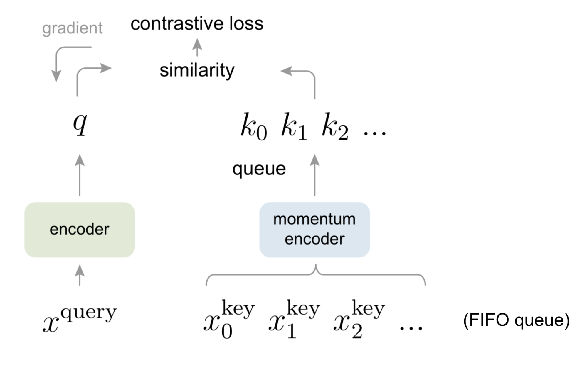
Momentum Contrast（MoCo）学习视觉表示的示意。（图源：He et al, 2019）
Illustration of how Momentum Contrast (MoCo) learns visual representations. (Image source: He et al, 2019)
相较 SimCLR，MoCo 的优势在于将批量大小与负样本数解耦；SimCLR 需要大批量以获得足够负样本，批量减小时性能会下降。
The advantage of MoCo compared to SimCLR is that MoCo decouples the batch size from the number of negatives, but SimCLR requires a large batch size in order to have enough negative samples and suffers performance drops when their batch size is reduced.
SimCLR 的两项设计——（1）MLP 投影头与（2）更强的数据增强——被证明非常有效。MoCo V2（Chen et al, 2020）结合二者，在不依赖超大批量的情况下获得更好的迁移性能。
Two designs in SimCLR, namely, (1) an MLP projection head and (2) stronger data augmentation, are proved to be very efficient. MoCo V2 (Chen et al, 2020) combined these two designs, achieving even better transfer performance with no dependency on a very large batch size.
CURL¶
EN CURL
CURL（Srinivas, et al. 2020）将上述思想用于强化学习。它通过对原始观测 \(o\) 的两个数据增强版本 \(o_q\) 与 \(o_k\) 用对比损失匹配嵌入来学习 RL 任务的视觉表示。CURL 主要依赖随机裁剪数据增强。键编码器实现为动量编码器，权重为查询编码器权重的 EMA，与 MoCo 相同。
CURL (Srinivas, et al. 2020) applies the above ideas in Reinforcement Learning. It learns a visual representation for RL tasks by matching embeddings of two data-augmented versions, \(o_q\) and \(o_k\), of the raw observation \(o\) via contrastive loss. CURL primarily relies on random crop data augmentation. The key encoder is implemented as a momentum encoder with weights as EMA of the query encoder weights, same as in MoCo.
RL 与有监督视觉任务的重要差异在于 RL 依赖连续帧之间的时间一致性。因此 CURL 对每帧栈一致地施加增强，以保留观测的时间结构信息。
One significant difference between RL and supervised visual tasks is that RL depends on temporal consistency between consecutive frames. Therefore, CURL applies augmentation consistently on each stack of frames to retain information about the temporal structure of the observation.
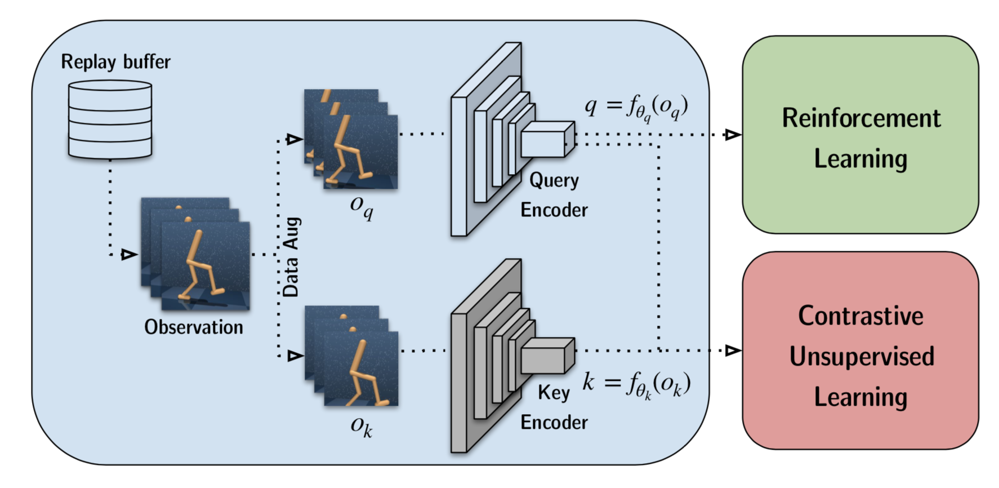
CURL 架构。（图源：Srinivas, et al. 2020）
The architecture of CURL. (Image source: Srinivas, et al. 2020)
特征聚类¶
EN Feature Clustering
DeepCluster¶
EN DeepCluster
DeepCluster（Caron et al. 2018）通过 k-means 迭代聚类特征，并以簇分配作为伪标签提供监督信号。
DeepCluster (Caron et al. 2018) iteratively clusters features via k-means and uses cluster assignments as pseudo labels to provide supervised signals.
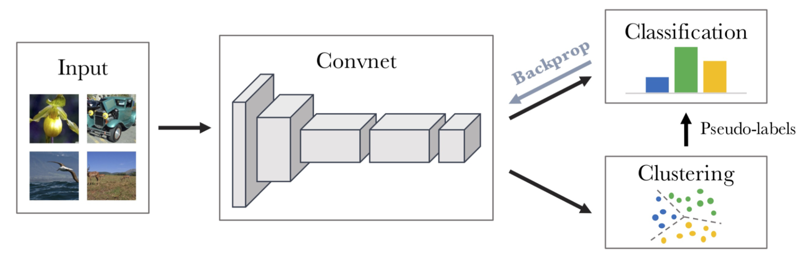
DeepCluster 方法示意：迭代聚类深度特征并以簇分配为伪标签。（图源：Caron et al. 2018）
Illustration of DeepCluster method which iteratively clusters deep features and uses the cluster assignments as pseudo-labels. (Image source: Caron et al. 2018)
每轮迭代中，DeepCluster 用先前表示对数据点聚类，再将新簇分配作为新表示的分类目标。但该迭代过程易出现平凡解。虽不使用负样本对，却需要代价高的聚类阶段及专门措施以避免坍缩到平凡解。
In each iteration, DeepCluster clusters data points using the prior representation and then produces the new cluster assignments as the classification targets for the new representation. However this iterative process is prone to trivial solutions. While avoiding the use of negative pairs, it requires a costly clustering phase and specific precautions to avoid collapsing to trivial solutions.
SwAV¶
EN SwAV
SwAV（Swapping Assignments between multiple Views；Caron et al. 2020）是在线对比学习算法。它从一个增强版本计算图像的 code，并尝试用同一图像的另一增强版本预测该 code。
SwAV (Swapping Assignments between multiple Views; Caron et al. 2020) is an online contrastive learning algorithm. It computes a code from an augmented version of the image and tries to predict this code using another augmented version of the same image.
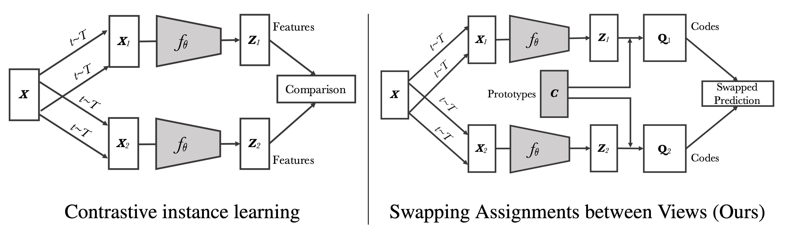
SwAV 与对比实例学习的对比。（图源：Caron et al. 2020）
Comparison of SwAV and contrastive instance learning. (Image source: Caron et al. 2020)
给定两种不同增强下图像的特征 \(\mathbf{z}_t\) 与 \(\mathbf{z}_s\)，SwAV 计算对应 code \(\mathbf{q}_t\)、\(\mathbf{q}_s\)，损失通过交换两个 code 并用 \(\ell(.)\) 度量特征与 code 的拟合程度来量化。
Given features of images with two different augmentations, \(\mathbf{z}_t\) and \(\mathbf{z}_s\), SwAV computes corresponding codes \(\mathbf{q}_t\) and \(\mathbf{q}_s\) and the loss quantifies the fit by swapping two codes using \(\ell(.)\) to measure the fit between a feature and a code.
交换拟合预测依赖预测 code 与 \(K\) 个可训练原型向量 \(\mathbf{C} = \{\mathbf{c}_1, \dots, \mathbf{c}_K\}\) 之间的交叉熵。原型矩阵在不同 batch 间共享，表示每个实例应聚类到的锚簇。
The swapped fit prediction depends on the cross entropy between the predicted code and a set of \(K\) trainable prototype vectors \(\mathbf{C} = \{\mathbf{c}_1, \dots, \mathbf{c}_K\}\). The prototype vector matrix is shared across different batches and represents anchor clusters that each instance should be clustered to.
在含 \(B\) 个特征向量 \(\mathbf{Z} = [\mathbf{z}_1, \dots, \mathbf{z}_B]\) 的 mini-batch 中，特征与原型向量的映射矩阵为 \(\mathbf{Q} = [\mathbf{q}_1, \dots, \mathbf{q}_B] \in \mathbb{R}_+^{K\times B}\)。希望最大化特征与原型的相似度：
In a mini-batch containing \(B\) feature vectors \(\mathbf{Z} = [\mathbf{z}_1, \dots, \mathbf{z}_B]\), the mapping matrix between features and prototype vectors is defined as \(\mathbf{Q} = [\mathbf{q}_1, \dots, \mathbf{q}_B] \in \mathbb{R}_+^{K\times B}\). We would like to maximize the similarity between the features and the prototypes:
其中 \(\mathcal{H}\) 为熵，\(\mathcal{H}(\mathbf{Q}) = - \sum_{ij} \mathbf{Q}_{ij} \log \mathbf{Q}_{ij}\)，控制 code 的平滑度。系数 \(\epsilon\) 不宜过大，否则所有样本会被均匀分配到所有簇。\(\mathbf{Q}\) 的候选解要求每行和为 \(1/K\)、每列和为 \(1/B\)，从而强制每个原型平均至少被选中 \(B/K\) 次。
where \(\mathcal{H}\) is the entropy, \(\mathcal{H}(\mathbf{Q}) = - \sum_{ij} \mathbf{Q}_{ij} \log \mathbf{Q}_{ij}\), controlling the smoothness of the code. The coefficient \(\epsilon\) should not be too large; otherwise, all the samples will be assigned uniformly to all the clusters. The candidate set of solutions for \(\mathbf{Q}\) requires every mapping matrix to have each row sum up to \(1/K\) and each column to sum up to \(1/B\), enforcing that each prototype gets selected at least \(B/K\) times on average.
SwAV 依赖迭代 Sinkhorn-Knopp 算法（Cuturi 2013）求解 \(\mathbf{Q}\)。
SwAV relies on the iterative Sinkhorn-Knopp algorithm (Cuturi 2013) to find the solution for \(\mathbf{Q}\).
利用有监督数据集¶
EN Working with Supervised Datasets
CLIP¶
EN CLIP
CLIP（Contrastive Language-Image Pre-training；Radford et al. 2021）联合训练文本编码器与图像特征提取器，预训练任务为预测哪段 caption 与哪张图像配对。
CLIP (Contrastive Language-Image Pre-training; Radford et al. 2021) jointly trains a text encoder and an image feature extractor over the pretraining task that predicts which caption goes with which image.
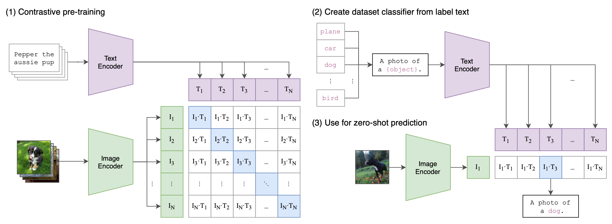
CLIP 在图文对上的对比预训练示意。（图源：Radford et al. 2021）
Illustration of CLIP contrastive pre-training over text-image pairs. (Image source: Radford et al. 2021)
给定 \(N\) 个（图像，文本）对的 batch，CLIP 计算该 batch 内全部 \(N\times N\) 个（图像，文本）候选之间的稠密余弦相似度矩阵。文本与图像编码器联合训练，最大化 \(N\) 对正确（图像，文本）关联的相似度，同时最小化 \(N(N-1)\) 对错误关联的相似度，通过对稠密矩阵的对称交叉熵损失实现。
Given a batch of \(N\) (image, text) pairs, CLIP computes the dense cosine similarity matrix between all \(N\times N\) possible (image, text) candidates within this batch. The text and image encoders are jointly trained to maximize the similarity between \(N\) correct pairs of (image, text) associations while minimizing the similarity for \(N(N-1)\) incorrect pairs via a symmetric cross entropy loss over the dense matrix.
CLIP 的 Numpy 风格伪代码见下图。
See the numy-like pseudo code for CLIP in
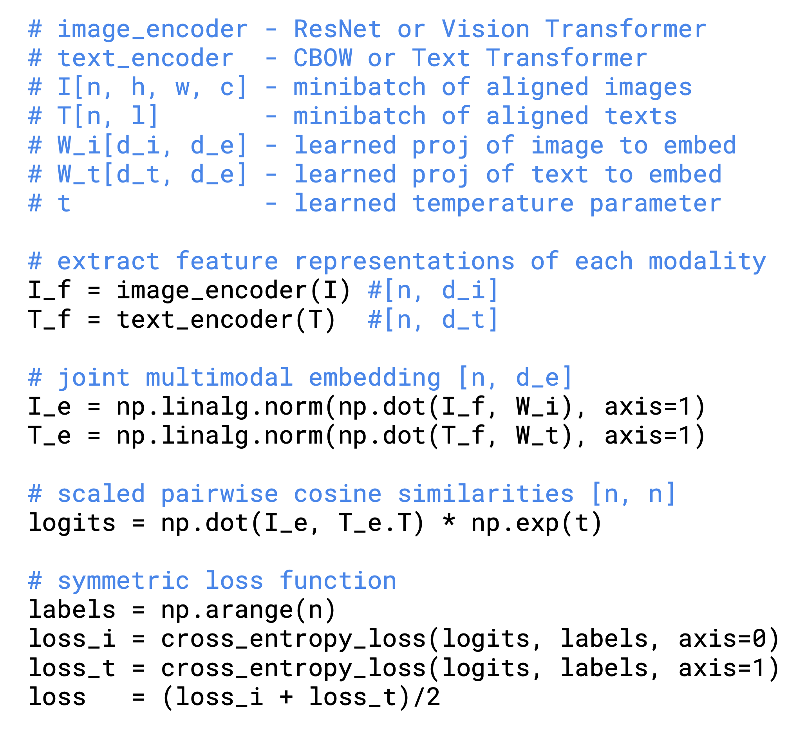
CLIP 的 Numpy 风格伪代码算法。（图源：Radford et al. 2021）
CLIP algorithm in Numpy style pseudo code. (Image source: Radford et al. 2021)
相较上述学习良好视觉表示的方法，CLIP 的特别之处在于「将自然语言作为训练信号」。它需要可获知哪段文本与哪张图像匹配的有监督数据集，在 4 亿（文本，图像）对上训练，数据来自互联网。查询列表包含英文维基百科中出现至少 100 次的全部词。有趣的是，他们发现基于 Transformer 的语言模型在零样本 ImageNet 分类上比词袋（BoW）文本编码器慢 3 倍。采用对比目标而非预测与图像关联的确切词（图像描述任务常用方法）可再将数据效率提升约 4 倍。
Compared to other methods above for learning good visual representation, what makes CLIP really special is "the appreciation of using natural language as a training signal". It does demand access to supervised dataset in which we know which text matches which image. It is trained on 400 million (text, image) pairs, collected from the Internet. The query list contains all the words occurring at least 100 times in the English version of Wikipedia. Interestingly, they found that Transformer-based language models are 3x slower than a bag-of-words (BoW) text encoder at zero-shot ImageNet classification. Using contrastive objective instead of trying to predict the exact words associated with images (i.e. a method commonly adopted by image caption prediction tasks) can further improve the data efficiency another 4x.
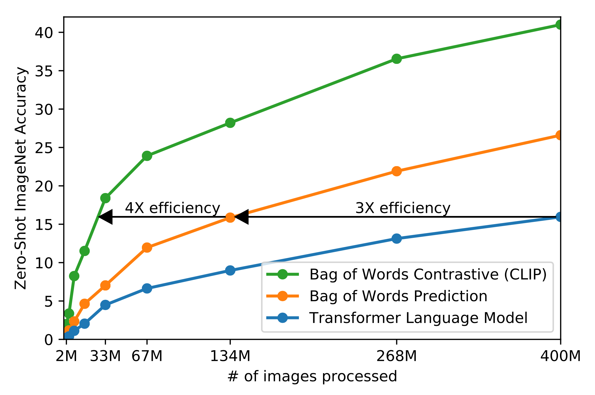
词袋文本编码与对比训练目标可带来数倍数据效率提升。（图源：Radford et al. 2021）
Using bag-of-words text encoding and contrastive training objectives can bring in multiple folds of data efficiency improvement. (Image source: Radford et al. 2021)
CLIP 产生良好的视觉表示，可非平凡地迁移到许多 CV 基准，结果与有监督基线具有竞争力。在测试的迁移任务中，CLIP 在非常细粒度分类以及计数物体数量等抽象或系统性任务上表现吃力。CLIP 模型的迁移性能与模型计算量平滑相关。
CLIP produces good visual representation that can non-trivially transfer to many CV benchmark datasets, achieving results competitive with supervised baseline. Among tested transfer tasks, CLIP struggles with very fine-grained classification, as well as abstract or systematic tasks such as counting the number of objects. The transfer performance of CLIP models is smoothly correlated with the amount of model compute.
有监督对比学习¶
EN Supervised Contrastive Learning
交叉熵损失存在若干已知问题，如对噪声标签缺乏鲁棒性、可能出现较差间隔。对交叉熵的改进包括 curated 更好的训练数据，如标签平滑与数据增强。有监督对比损失（Supervised Contrastive Loss；Khosla et al. 2021）旨在比交叉熵更有效地利用标签信息，要求同类归一化嵌入彼此更接近，不同类比嵌入更远离。
There are several known issues with cross entropy loss, such as the lack of robustness to noisy labels and the possibility of poor margins. Existing improvement for cross entropy loss involves the curation of better training data, such as label smoothing and data augmentation. Supervised Contrastive Loss (Khosla et al. 2021) aims to leverage label information more effectively than cross entropy, imposing that normalized embeddings from the same class are closer together than embeddings from different classes.
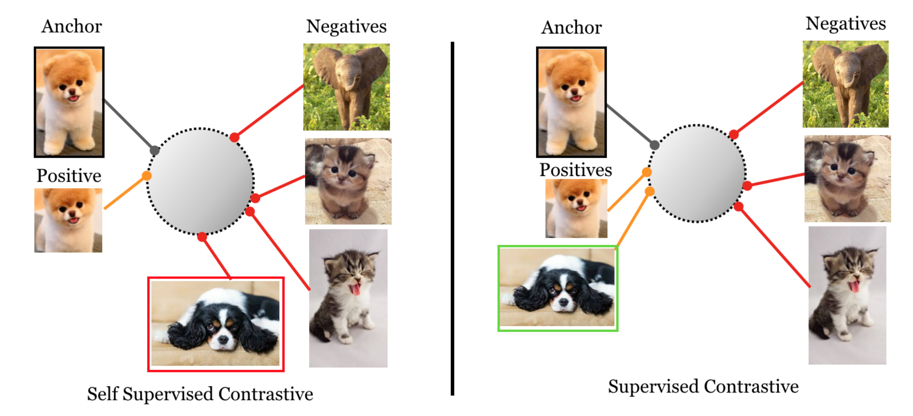
有监督与自监督对比损失对比。有监督对比学习除增强版本外，还将同类不同样本视为正例。（图源：Khosla et al. 2021）
Supervised vs self-supervised contrastive losses. Supervised contrastive learning considers different samples from the same class as positive examples, in addition to augmented versions. (Image source: Khosla et al. 2021)
给定随机采样的 \(n\) 个（图像，标签）对 \(\{\mathbf{x}_i, y_i\}_{i=1}^n\)，对每个样本施加两次随机增强，得到 \(2n\) 个训练对 \(\{\tilde{\mathbf{x}}_i, \tilde{y}_i\}_{i=1}^{2n}\)。
Given a set of randomly sampled \(n\) (image, label) pairs, \(\{\mathbf{x}_i, y_i\}_{i=1}^n\), \(2n\) training pairs can be created by applying two random augmentations of every sample, \(\{\tilde{\mathbf{x}}_i, \tilde{y}_i\}_{i=1}^{2n}\).
有监督对比损失 \(\mathcal{L}_\text{supcon}\) 利用多个正负样本，与 soft nearest-neighbor 损失非常相似：
Supervised contrastive loss \(\mathcal{L}_\text{supcon}\) utilizes multiple positive and negative samples, very similar to soft nearest-neighbor loss:
其中 \(\mathbf{z}_k=P(E(\tilde{\mathbf{x}_k}))\)，\(E(.)\) 为编码网络（增强图像映射为向量），\(P(.)\) 为投影网络（一向量映射为另一向量）。\(N_i= \{j \in I: \tilde{y}_j = \tilde{y}_i \}\) 为标签 \(y_i\) 的样本索引集。向集合 \(N_i\) 纳入更多正样本可提升结果。
where \(\mathbf{z}_k=P(E(\tilde{\mathbf{x}_k}))\), in which \(E(.)\) is an encoder network (augmented image mapped to vector) \(P(.)\) is a projection network (one vector mapped to another). \(N_i= \{j \in I: \tilde{y}_j = \tilde{y}_i \}\) contains a set of indices of samples with label \(y_i\). Including more positive samples into the set \(N_i\) leads to improved results.
根据其实验，有监督对比损失：
According to their experiments, supervised contrastive loss:
- 优于基础交叉熵，但幅度较小。
- 在鲁棒性基准（ImageNet-C，对 ImageNet 施加常见自然扰动如噪声、模糊与对比度变化）上优于交叉熵。
- 对超参数变化更不敏感。
- does outperform the base cross entropy, but only by a small amount.
- outperforms the cross entropy on robustness benchmark (ImageNet-C, which applies common naturally occuring perturbations such as noise, blur and contrast changes to the ImageNet dataset).
- is less sensitive to hyperparameter changes.
语言：句子嵌入¶
EN Language: Sentence Embedding
本节聚焦于如何学习句子嵌入。
In this section, we focus on how to learn sentence embedding.
文本增强¶
EN Text Augmentation
视觉应用中的大多数对比学习方法都依赖于为每张图像创建增强版本。然而，构造不改变句子语义的文本增强更具挑战性。本节我们将探讨三种增强文本序列的方法，包括词法编辑、回译以及应用截断或 dropout。
Most contrastive methods in vision applications depend on creating an augmented version of each image. However, it is more challenging to construct text augmentation which does not alter the semantics of a sentence. In this section we look into three approaches for augmenting text sequences, including lexical edits, back-translation and applying cutoff or dropout.
词法编辑¶
EN Lexical Edits
EDA（Easy Data Augmentation；Wei & Zou 2019）定义了一组简单但强大的文本增强操作。给定一个句子，EDA 随机选择并应用以下四种简单操作之一：
EDA (Easy Data Augmentation; Wei & Zou 2019) defines a set of simple but powerful operations for text augmentation. Given a sentence, EDA randomly chooses and applies one of four simple operations:
- 同义词替换（SR）：将 \(n\) 个随机非停用词替换为其同义词。
- 随机插入（RI）：在句子的随机位置插入一个从随机选定的非停用词的同义词。
- 随机交换（RS）：随机交换两个词，并重复 \(n\) 次。
- 随机删除（RD）：以概率 \(p\) 随机删除句子中的每个词。
- Synonym replacement (SR): Replace \(n\) random non-stop words with their synonyms.
- Random insertion (RI): Place a random synonym of a randomly selected non-stop word in the sentence at a random position.
- Random swap (RS): Randomly swap two words and repeat \(n\) times.
- Random deletion (RD): Randomly delete each word in the sentence with probability \(p\).
其中 \(p=\alpha\) 且 \(n=\alpha \times \text{sentence_length}\)，其直觉是：更长的句子在保持原始标签的同时可以吸收更多噪声。超参数 \(\alpha\) 大致表示一个句子中可能被一次增强改变的词的百分比。
where \(p=\alpha\) and \(n=\alpha \times \text{sentence_length}\), with the intuition that longer sentences can absorb more noise while maintaining the original label. The hyperparameter \(\alpha\) roughly indicates the percent of words in one sentence that may be changed by one augmentation.
EDA 在多个分类基准数据集上被证明能提升分类准确率，相比未使用 EDA 的基线。在较小的训练集上，性能提升更为显著。EDA 中的四种操作都有助于提高分类准确率，但在不同的 \(\alpha\) 值下达到最优。
EDA is shown to improve the classification accuracy on several classification benchmark datasets compared to baseline without EDA. The performance lift is more significant on a smaller training set. All the four operations in EDA help improve the classification accuracy, but get to optimal at different \(\alpha\)'s.
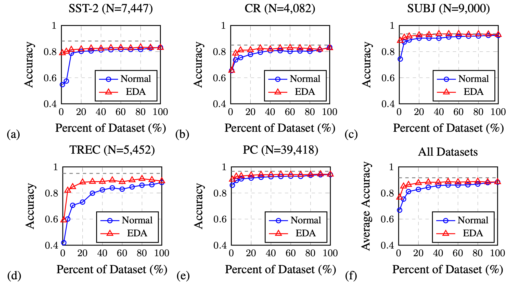
EDA 在多个分类基准上带来性能提升。
EDA leads to performance improvement on several classification benchmarks. (Image source: Wei & Zou 2019)
在 Contextual Augmentation（Sosuke Kobayashi, 2018）中，位置 \(i\) 处词 \(w_i\) 的新替换可以从给定概率分布 \(p(.\mid S\setminus\{w_i\})\) 中平滑采样，该分布由类似 BERT 的双向语言模型预测。
In Contextual Augmentation (Sosuke Kobayashi, 2018), new substitutes for word \(w_i\) at position \(i\) can be smoothly sampled from a given probability distribution, \(p(.\mid S\setminus\{w_i\})\), which is predicted by a bidirectional LM like BERT.
回译¶
EN Back-translation
CERT（Contrastive self-supervised Encoder Representations from Transformers；Fang et al. (2020)；code）通过回译生成增强句子。可以使用针对不同语言的不同翻译模型来创建不同版本的增强。一旦我们有了文本样本的噪声版本，就可以使用上文介绍的许多对比学习框架（例如 MoCo）来学习句子嵌入。
CERT (Contrastive self-supervised Encoder Representations from Transformers; Fang et al. (2020); code) generates augmented sentences via back-translation. Various translation models for different languages can be employed for creating different versions of augmentations. Once we have a noise version of text samples, many contrastive learning frameworks introduced above, such as MoCo, can be used to learn sentence embedding.
Dropout 与截断¶
EN Dropout and Cutoff
Shen 等人（2020）提出将截断（Cutoff）应用于文本增强，灵感来自 cross-view training。他们提出了三种截断增强策略：
Shen et al. (2020) proposed to apply Cutoff to text augmentation, inspired by cross-view training. They proposed three cutoff augmentation strategies:
- Token cutoff 移除若干选定 token 的信息。为确保没有数据泄漏，输入、位置编码及其他相关嵌入矩阵中对应的 token 都应置零。
- Feature cutoff 移除若干特征列。
- Span cutoff 移除一段连续的文本块。
- Token cutoff removes the information of a few selected tokens. To make sure there is no data leakage, corresponding tokens in the input, positional and other relevant embedding matrices should all be zeroed out.,
- Feature cutoff removes a few feature columns.
- Span cutoff removes a continuous chunk of texts.
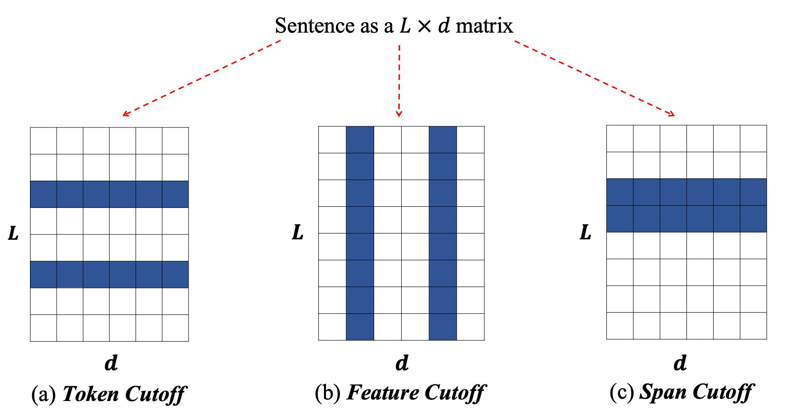
token、feature 与 span 截断增强策略示意图。
Schematic illustration of token, feature and span cutoff augmentation strategies. (Image source: Shen et al. 2020)
可以为一个样本创建多个增强版本。训练时，Shen 等人（2020）应用额外的 KL 散度项来衡量不同增强样本预测之间的一致性。
Multiple augmented versions of one sample can be created. When training, Shen et al. (2020) applied an additional KL-divergence term to measure the consensus between predictions from different augmented samples.
SimCSE（Gao et al. 2021；code）从无监督数据中学习，仅通过 dropout 噪声预测句子自身。换言之，他们将 dropout 作为文本序列的数据增强。一个样本简单地以不同的 dropout mask 两次输入编码器，这两个版本构成正样本对，批次内其他样本则视为负样本对。这与截断增强颇为相似，但 dropout 更灵活，对被 mask 掉的内容缺乏明确定义的语义含义。
SimCSE (Gao et al. 2021; code) learns from unsupervised data by predicting a sentence from itself with only dropout noise. In other words, they treat dropout as data augmentation for text sequences. A sample is simply fed into the encoder twice with different dropout masks and these two versions are the positive pair where the other in-batch samples are considered as negative pairs. It feels quite similar to the cutoff augmentation, but dropout is more flexible with less well-defined semantic meaning of what content can be masked off.
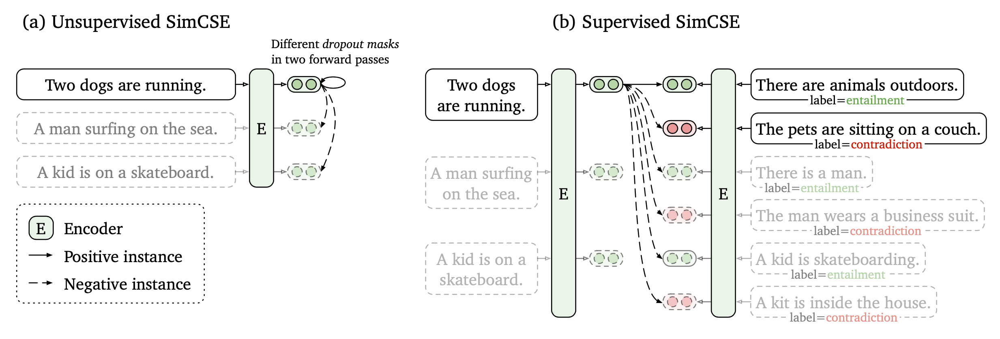
SimCSE 通过应用不同的 dropout mask 创建增强样本。监督版本利用自然语言推断（NLI）数据集，给定句子对预测正样本（蕴含）或负样本（矛盾）。
SimCSE creates augmented samples by applying different dropout masks. The supervised version leverages NLI datasets to predict positive (entailment) or negative (contradiction) given a pair of sentences. (Image source: Gao et al. 2021)
他们在 7 个 STS（Semantic Text Similarity，语义文本相似度）数据集上进行了实验，计算句子嵌入之间的余弦相似度。他们还尝试了可选的 MLM 辅助目标损失，以帮助避免灾难性遗忘 token 级知识。该辅助损失被发现有助于提升迁移任务上的性能，但在主要 STS 任务上有一致的下降。
They ran experiments on 7 STS (Semantic Text Similarity) datasets and computed cosine similarity between sentence embeddings. They also tried out an optional MLM auxiliary objective loss to help avoid catastrophic forgetting of token-level knowledge. This aux loss was found to help improve performance on transfer tasks, but a consistent drop on the main STS tasks.
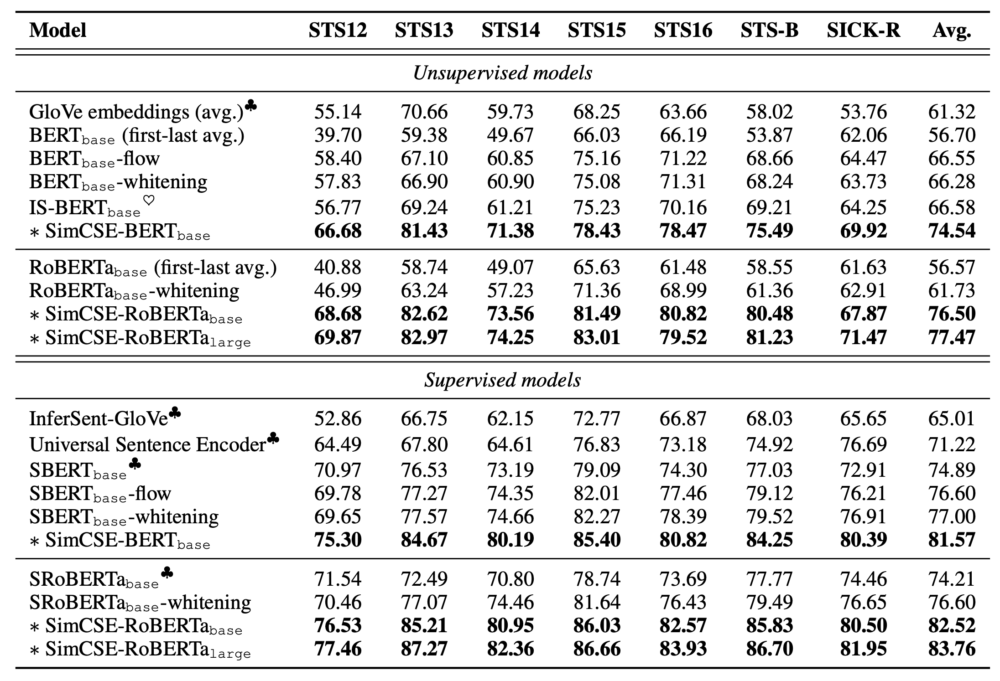
SimCSE 在一组 STS 基准上的实验结果。
Experiment numbers on a collection of STS benchmarks with SimCES. (Image source: Gao et al. 2021)
来自 NLI 的监督¶
EN Supervision from NLI
未经任何微调时，预训练 BERT 的句子嵌入在语义相似度任务上表现不佳。我们不能直接使用原始嵌入，而需要通过进一步微调来改进嵌入。
The pre-trained BERT sentence embedding without any fine-tuning has been found to have poor performance for semantic similarity tasks. Instead of using the raw embeddings directly, we need to refine the embedding with further fine-tuning.
自然语言推断（NLI）任务是提供监督信号以学习句子嵌入的主要数据来源；例如 SNLI、MNLI 和 QQP。
Natural Language Inference (NLI) tasks are the main data sources to provide supervised signals for learning sentence embedding; such as SNLI, MNLI, and QQP.
Sentence-BERT¶
EN Sentence-BERT
SBERT（Sentence-BERT）（Reimers & Gurevych, 2019）依赖孪生网络与三元组网络架构来学习句子嵌入，使得句子相似度可以通过嵌入对之间的余弦相似度来估计。注意，学习 SBERT 依赖监督数据，因为它在多个 NLI 数据集上进行了微调。
SBERT (Sentence-BERT) (Reimers & Gurevych, 2019) relies on siamese and triplet network architectures to learn sentence embeddings such that the sentence similarity can be estimated by cosine similarity between pairs of embeddings. Note that learning SBERT depends on supervised data, as it is fine-tuned on several NLI datasets.
他们在 BERT 模型之上实验了若干不同的预测头：
They experimented with a few different prediction heads on top of BERT model:
- Softmax 分类目标：孪生网络的分类头建立在两个嵌入 \(f(\mathbf{x}), f(\mathbf{x}')\) 与 \(\vert f(\mathbf{x}) - f(\mathbf{x}') \vert\) 的拼接之上。预测输出为 \(\hat{y}=\text{softmax}(\mathbf{W}_t [f(\mathbf{x}); f(\mathbf{x}'); \vert f(\mathbf{x}) - f(\mathbf{x}') \vert])\)。他们表明最重要的组件是逐元素差 \(\vert f(\mathbf{x}) - f(\mathbf{x}') \vert\)。
- 回归目标：这是对 \(\cos(f(\mathbf{x}), f(\mathbf{x}'))\) 的回归损失，其中池化策略影响较大。实验中他们观察到
max远差于mean和CLS-token。 - 三元组目标：\(\max(0, |f(\mathbf{x}) - f(\mathbf{x}^+)|- |f(\mathbf{x}) - f(\mathbf{x}^-)| + \epsilon)\)，其中 \(\mathbf{x}, \mathbf{x}^+, \mathbf{x}^-\) 分别为锚点、正样本与负样本句子的嵌入。
- Softmax classification objective: The classification head of the siamese network is built on the concatenation of two embeddings \(f(\mathbf{x}), f(\mathbf{x}')\) and \(\vert f(\mathbf{x}) - f(\mathbf{x}') \vert\). The predicted output is \(\hat{y}=\text{softmax}(\mathbf{W}_t [f(\mathbf{x}); f(\mathbf{x}'); \vert f(\mathbf{x}) - f(\mathbf{x}') \vert])\). They showed that the most important component is the element-wise difference \(\vert f(\mathbf{x}) - f(\mathbf{x}') \vert\).
- Regression objective: This is the regression loss on \(\cos(f(\mathbf{x}), f(\mathbf{x}'))\), in which the pooling strategy has a big impact. In the experiments, they observed that
maxperforms much worse thanmeanandCLS-token.- Triplet objective: \(\max(0, |f(\mathbf{x}) - f(\mathbf{x}^+)|- |f(\mathbf{x}) - f(\mathbf{x}^-)| + \epsilon)\), where \(\mathbf{x}, \mathbf{x}^+, \mathbf{x}^-\) are embeddings of the anchor, positive and negative sentences.
实验中哪种目标函数效果最好取决于数据集，因此没有普适的最优选择。
In the experiments, which objective function works the best depends on the datasets, so there is no universal winner.
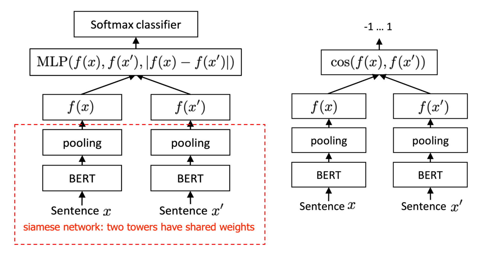
Sentence-BERT 训练框架示意图，含 softmax 分类头与回归头。
Illustration of Sentence-BERT training framework with softmax classification head and regression head. (Image source: Reimers & Gurevych, 2019)
SentEval 库（Conneau and Kiela, 2018）常用于评估所学句子嵌入的质量。SBERT 在当时（2019 年 8 月）的 7 项任务中有 5 项优于其他基线。
The SentEval library (Conneau and Kiela, 2018) is commonly used for evaluating the quality of learned sentence embedding. SBERT outperformed other baselines at that time (Aug 2019) on 5 out of 7 tasks.
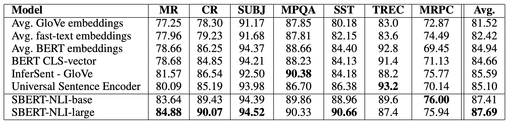
Sentence-BERT 在 SentEval 基准上的性能。
The performance of Sentence-BERT on the SentEval benchmark. (Image source: Reimers & Gurevych, 2019)
BERT-flow¶
EN BERT-flow
若嵌入在各维度上均匀分布，则称嵌入表示空间为各向同性（isotropic）；否则为各向异性（anisotropic）。Li 等人（2020）表明，预训练 BERT 学习到的是非平滑的各向异性句子嵌入语义空间，因此在未经微调时文本相似度任务表现较差。经验上，他们观察到 BERT 句子嵌入存在两个问题：词频使嵌入空间产生偏置——高频词靠近原点，低频词远离原点；低频词稀疏散布——低频词嵌入往往离其 \(k\)-NN 邻居更远，而高频词嵌入更密集地聚集。
The embedding representation space is deemed isotropic if embeddings are uniformly distributed on each dimension; otherwise, it is anisotropic. Li et al, (2020) showed that a pre-trained BERT learns a non-smooth anisotropic semantic space of sentence embeddings and thus leads to poor performance for text similarity tasks without fine-tuning. Empirically, they observed two issues with BERT sentence embedding: Word frequency biases the embedding space. High-frequency words are close to the origin, but low-frequency ones are far away from the origin. Low-frequency words scatter sparsely. The embeddings of low-frequency words tend to be farther to their \(k\)-NN neighbors, while the embeddings of high-frequency words concentrate more densely.
BERT-flow（Li et al, 2020；code）通过归一化流（normalizing flows）将嵌入变换为平滑且各向同性的高斯分布。
BERT-flow (Li et al, 2020; code) was proposed to transform the embedding to a smooth and isotropic Gaussian distribution via normalizing flows.
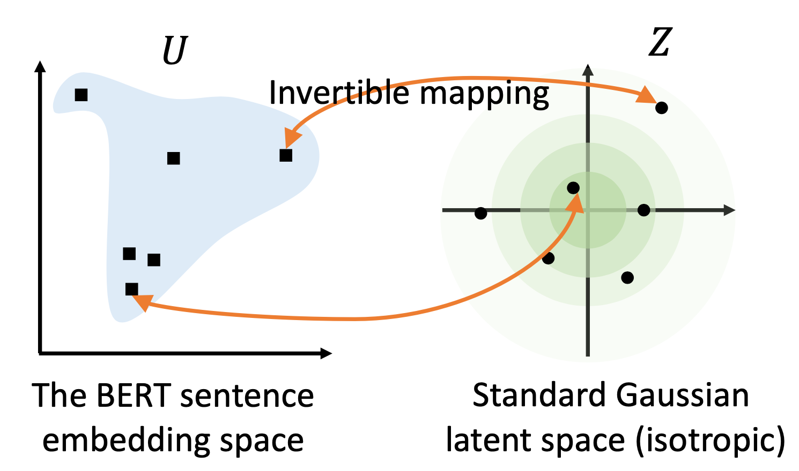
BERT-flow 中对原始句子嵌入空间进行基于流的校准示意图。
Illustration of the flow-based calibration over the original sentence embedding space in BERT-flow. (Image source: Li et al, 2020)
令 \(\mathcal{U}\) 为观测到的 BERT 句子嵌入空间，\(\mathcal{Z}\) 为期望的潜空间（标准高斯）。于是 \(p_\mathcal{Z}\) 为高斯密度函数，\(f_\phi: \mathcal{Z}\to\mathcal{U}\) 为可逆变换：
Let \(\mathcal{U}\) be the observed BERT sentence embedding space and \(\mathcal{Z}\) be the desired latent space which is a standard Gaussian. Thus, \(p_\mathcal{Z}\) is a Gaussian density function and \(f_\phi: \mathcal{Z}\to\mathcal{U}\) is an invertible transformation:
基于流的生成模型通过最大化 \(\mathcal{U}\) 的边缘似然来学习可逆映射函数：
A flow-based generative model learns the invertible mapping function by maximizing the likelihood of \(\mathcal{U}\)'s marginal:
其中 \(s\) 为从文本语料 \(\mathcal{D}\) 中采样的句子。仅优化流参数 \(\phi\)，预训练 BERT 的参数保持不变。
where \(s\) is a sentence sampled from the text corpus \(\mathcal{D}\). Only the flow parameters \(\phi\) are optimized while parameters in the pretrained BERT stay unchanged.
BERT-flow 被证明在大多数 STS 任务上提升性能，无论是否使用 NLI 数据集的监督。由于学习归一化流进行校准不需要标签，它可以利用包括验证集与测试集在内的整个数据集。
BERT-flow was shown to improve the performance on most STS tasks either with or without supervision from NLI datasets. Because learning normalizing flows for calibration does not require labels, it can utilize the entire dataset including validation and test sets.
白化操作¶
EN Whitening Operation
Su 等人（2021）应用白化（whitening）操作以改善所学表示的各向同性，并降低句子嵌入的维度。
Su et al. (2021) applied whitening operation to improve the isotropy of the learned representation and also to reduce the dimensionality of sentence embedding.
他们将句子向量的均值变换为 0，协方差矩阵变换为单位矩阵。给定样本集 \(\{\mathbf{x}_i\}_{i=1}^N\)，令 \(\tilde{\mathbf{x}}_i\) 与 \(\tilde{\Sigma}\) 为变换后的样本及对应协方差矩阵：
They transform the mean value of the sentence vectors to 0 and the covariance matrix to the identity matrix. Given a set of samples \(\{\mathbf{x}_i\}_{i=1}^N\), let \(\tilde{\mathbf{x}}_i\) and \(\tilde{\Sigma}\) be the transformed samples and corresponding covariance matrix:
若对 \(\Sigma\) 做 SVD 分解 \(\Sigma = U\Lambda U^\top\)，则有 \(W^{-1}=\sqrt{\Lambda} U^\top\) 且 \(W=U\sqrt{\Lambda^{-1}}\)。在 SVD 中，\(U\) 为正交矩阵，列向量为特征向量；\(\Lambda\) 为对角矩阵，对角元素为排序后的正特征值。
If we get SVD decomposition of \(\Sigma = U\Lambda U^\top\), we will have \(W^{-1}=\sqrt{\Lambda} U^\top\) and \(W=U\sqrt{\Lambda^{-1}}\). Note that within SVD, \(U\) is an orthogonal matrix with column vectors as eigenvectors and \(\Lambda\) is a diagonal matrix with all positive elements as sorted eigenvalues.
可通过只取 \(W\) 的前 \(k\) 列来应用降维策略，称为 Whitening-\(k\)。
A dimensionality reduction strategy can be applied by only taking the first \(k\) columns of \(W\), named
Whitening-\(k\).
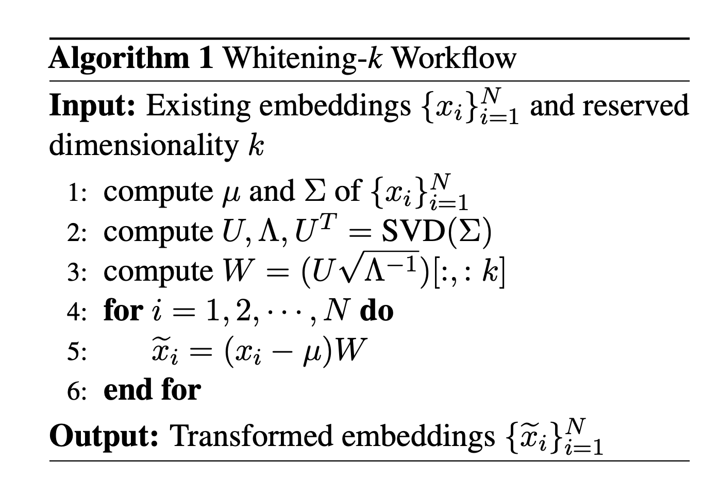
whitening-\(k\) 操作的伪代码。
Pseudo code of the whitening-\(k\) operation. (Image source: Su et al. 2021)
白化操作被证明优于 BERT-flow，在 256 维句子嵌入下于许多 STS 基准上达到 SOTA，无论是否使用 NLI 监督。
Whitening operations were shown to outperform BERT-flow and achieve SOTA with 256 sentence dimensionality on many STS benchmarks, either with or without NLI supervision.
无监督句子嵌入学习¶
EN Unsupervised Sentence Embedding Learning
上下文预测¶
EN Context Prediction
Quick-Thought（QT）向量（Logeswaran & Lee, 2018）将句子表示学习表述为分类问题：给定一个句子及其上下文，分类器根据向量表示区分上下文句子与其他对比句子（“完形填空”测试）。这种表述移除了导致训练变慢的 softmax 输出层。
Quick-Thought (QT) vectors (Logeswaran & Lee, 2018) formulate sentence representation learning as a classification problem: Given a sentence and its context, a classifier distinguishes context sentences from other contrastive sentences based on their vector representations ("cloze test"). Such a formulation removes the softmax output layer which causes training slowdown.
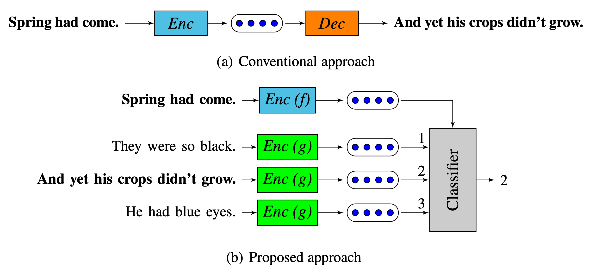
Quick-Thought 句子嵌入向量学习示意图。
Illustration of how Quick-Thought sentence embedding vectors are learned. (Image source: Logeswaran & Lee, 2018)
令 \(f(.)\) 与 \(g(.)\) 为将句子 \(s\) 编码为定长向量的两个函数。令 \(C(s)\) 为 \(s\) 的上下文句子集合，\(S(s)\) 为候选句子集合，其中仅包含一个上下文句子 \(s_c \in C(s)\) 及许多非上下文负样本句子。Quick Thoughts 模型学习优化预测唯一真实上下文句子 \(s_c \in S(s)\) 的概率。当将句子对 \((s, s_c)\) 视为正样本对、而将其他对 \((s, s')\)（\(s' \in S(s), s'\neq s_c\)）视为负样本时，这本质上就是 NCE 损失。
Let \(f(.)\) and \(g(.)\) be two functions that encode a sentence \(s\) into a fixed-length vector. Let \(C(s)\) be the set of sentences in the context of \(s\) and \(S(s)\) be the set of candidate sentences including only one sentence \(s_c \in C(s)\) and many other non-context negative sentences. Quick Thoughts model learns to optimize the probability of predicting the only true context sentence \(s_c \in S(s)\). It is essentially NCE loss when considering the sentence \((s, s_c)\) as the positive pairs while other pairs \((s, s')\) where \(s' \in S(s), s'\neq s_c\) as negatives.
互信息最大化¶
EN Mutual Information Maximization
IS-BERT（Info-Sentence BERT）（Zhang et al. 2020；code）采用基于互信息最大化的自监督学习目标，以无监督方式学习良好的句子嵌入。
IS-BERT (Info-Sentence BERT) (Zhang et al. 2020; code) adopts a self-supervised learning objective based on mutual information maximization to learn good sentence embeddings in the unsupervised manners.
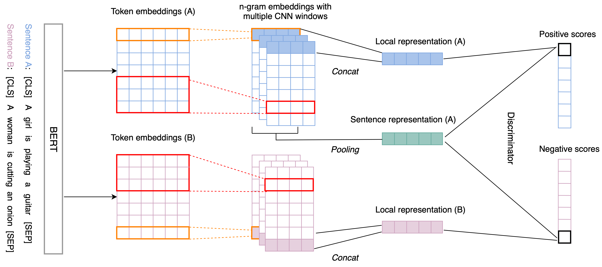
Info-Sentence BERT 示意图。
Illustration of Info-Sentence BERT. (Image source: Zhang et al. 2020)
IS-BERT 工作流程如下：
IS-BERT works as follows:
使用 BERT 将输入句子 \(s\) 编码为长度为 \(l\) 的 token 嵌入 \(\mathbf{h}_{1:l}\)。
Use BERT to encode an input sentence \(s\) to a token embedding of length \(l\), \(\mathbf{h}_{1:l}\).
然后应用具有不同核大小（例如 1、3、5）的一维卷积网络处理 token 嵌入序列，以捕获 n-gram 局部上下文依赖：\(\mathbf{c}_i = \text{ReLU}(\mathbf{w} \cdot \mathbf{h}_{i:i+k-1} + \mathbf{b})\)。输出序列经填充以保持与输入相同尺寸。
Then apply 1-D conv net with different kernel sizes (e.g. 1, 3, 5) to process the token embedding sequence to capture the n-gram local contextual dependencies: \(\mathbf{c}_i = \text{ReLU}(\mathbf{w} \cdot \mathbf{h}_{i:i+k-1} + \mathbf{b})\). The output sequences are padded to stay the same sizes of the inputs.
第 \(i\) 个 token 的最终局部表示 \(\mathcal{F}_\theta^{(i)} (\mathbf{x})\) 为不同核大小表示的拼接。
The final local representation of the \(i\)-th token \(\mathcal{F}_\theta^{(i)} (\mathbf{x})\) is the concatenation of representations of different kernel sizes.
全局句子表示 \(\mathcal{E}_\theta(\mathbf{x})\) 通过对 token 表示 \(\mathcal{F}_\theta(\mathbf{x}) = \{\mathcal{F}_\theta^{(i)} (\mathbf{x}) \in \mathbb{R}^d\}_{i=1}^l\) 做 mean-over-time 池化得到。
The global sentence representation \(\mathcal{E}_\theta(\mathbf{x})\) is computed by applying a mean-over-time pooling layer on the token representations \(\mathcal{F}_\theta(\mathbf{x}) = \{\mathcal{F}_\theta^{(i)} (\mathbf{x}) \in \mathbb{R}^d\}_{i=1}^l\).
由于互信息估计对连续高维随机变量通常不可 tract，IS-BERT 依赖 Jensen-Shannon 估计器（Nowozin et al., 2016, Hjelm et al., 2019）来最大化 \(\mathcal{E}_\theta(\mathbf{x})\) 与 \(\mathcal{F}_\theta^{(i)} (\mathbf{x})\) 之间的互信息。
Since the mutual information estimation is generally intractable for continuous and high-dimensional random variables, IS-BERT relies on the Jensen-Shannon estimator (Nowozin et al., 2016, Hjelm et al., 2019) to maximize the mutual information between \(\mathcal{E}_\theta(\mathbf{x})\) and \(\mathcal{F}_\theta^{(i)} (\mathbf{x})\).
其中 \(T_\omega: \mathcal{F}\times\mathcal{E} \to \mathbb{R}\) 为可学习网络，参数为 \(\omega\)，生成分类器分数。负样本 \(\mathbf{x}'\) 从分布 \(\tilde{P}=P\) 采样。\(\text{sp}(x)=\log(1+e^x)\) 为 softplus 激活函数。
where \(T_\omega: \mathcal{F}\times\mathcal{E} \to \mathbb{R}\) is a learnable network with parameters \(\omega\), generating discriminator scores. The negative sample \(\mathbf{x}'\) is sampled from the distribution \(\tilde{P}=P\). And \(\text{sp}(x)=\log(1+e^x)\) is the softplus activation function.
IS-BERT 在 SentEval 上的无监督结果优于大多数无监督基线（2020 年 9 月），但 unsurprisingly 弱于监督运行。使用带标签的 NLI 数据集时，IS-BERT 产生与 SBERT 相当的结果（见图 25 与 30）。
The unsupervised numbers on SentEval with IS-BERT outperforms most of the unsupervised baselines (Sep 2020), but unsurprisingly weaker than supervised runs. When using labelled NLI datasets, IS-BERT produces results comparable with SBERT (See Fig. 25 & 30).
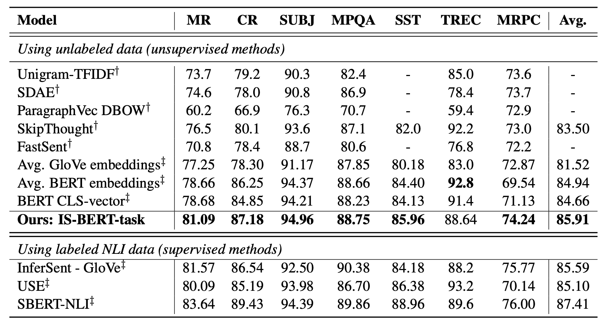
IS-BERT 在 SentEval 基准上的性能。
The performance of IS-BERT on the SentEval benchmark. (Image source: Zhang et al. 2020)
引用¶
EN Citation
引用格式如下：
Cited as:
Weng, Lilian. (May 2021). Contrastive representation learning. Lil'Log. https://lilianweng.github.io/posts/2021-05-31-contrastive/.
Weng, Lilian. (May 2021). Contrastive representation learning. Lil'Log. https://lilianweng.github.io/posts/2021-05-31-contrastive/.
或
Or
@article{weng2021contrastive,
title = "Contrastive Representation Learning",
author = "Weng, Lilian",
journal = "lilianweng.github.io",
year = "2021",
month = "May",
url = "https://lilianweng.github.io/posts/2021-05-31-contrastive/"
}
（中文说明：以上为 Lilian Weng 博客《Contrastive Representation Learning》的 BibTeX 引用条目，可直接用于 LaTeX 参考文献。）
参考文献¶
EN References
[1] Sumit Chopra, Raia Hadsell and Yann LeCun.「Learning a similarity metric discriminatively, with application to face verification.」/「判别式学习相似度度量及其在人脸验证中的应用。」CVPR 2005.
[1] Sumit Chopra, Raia Hadsell and Yann LeCun."Learning a similarity metric discriminatively, with application to face verification." CVPR 2005.
[2] Florian Schroff, Dmitry Kalenichenko and James Philbin.「FaceNet: A Unified Embedding for Face Recognition and Clustering.」/「FaceNet：用于人脸识别与聚类的统一嵌入。」CVPR 2015.
[2] Florian Schroff, Dmitry Kalenichenko and James Philbin."FaceNet: A Unified Embedding for Face Recognition and Clustering." CVPR 2015.
[3] Hyun Oh Song et al.「Deep Metric Learning via Lifted Structured Feature Embedding.」/「通过提升结构化特征嵌入进行深度度量学习。」CVPR 2016. code
[3] Hyun Oh Song et al."Deep Metric Learning via Lifted Structured Feature Embedding." CVPR 2016. code
[4] Ruslan Salakhutdinov and Geoff Hinton.「Learning a Nonlinear Embedding by Preserving Class Neighbourhood Structure」/「通过保持类邻域结构学习非线性嵌入」AISTATS 2007.
[4] Ruslan Salakhutdinov and Geoff Hinton."Learning a Nonlinear Embedding by Preserving Class Neighbourhood Structure" AISTATS 2007.
[5] Michael Gutmann and Aapo Hyvärinen.「Noise-contrastive estimation: A new estimation principle for unnormalized statistical models.」/「噪声对比估计：非归一化统计模型的新估计原理。」AISTATS 2010.
[5] Michael Gutmann and Aapo Hyvärinen."Noise-contrastive estimation: A new estimation principle for unnormalized statistical models." AISTATS 2010.
[6] Kihyuk Sohn et al.「Improved Deep Metric Learning with Multi-class N-pair Loss Objective」/「使用多类 N-pair 损失目标改进深度度量学习」NIPS 2016.
[6] Kihyuk Sohn et al."Improved Deep Metric Learning with Multi-class N-pair Loss Objective" NIPS 2016.
[7] Nicholas Frosst, Nicolas Papernot and Geoffrey Hinton.「Analyzing and Improving Representations with the Soft Nearest Neighbor Loss.」/「用 Soft 最近邻损失分析与改进表示。」ICML 2019
[7] Nicholas Frosst, Nicolas Papernot and Geoffrey Hinton."Analyzing and Improving Representations with the Soft Nearest Neighbor Loss." ICML 2019
[8] Tongzhou Wang and Phillip Isola.「Understanding Contrastive Representation Learning through Alignment and Uniformity on the Hypersphere.」/「通过超球面上的对齐与均匀性理解对比表示学习。」ICML 2020. code
[8] Tongzhou Wang and Phillip Isola."Understanding Contrastive Representation Learning through Alignment and Uniformity on the Hypersphere." ICML 2020. code
[9] Zhirong Wu et al.「Unsupervised feature learning via non-parametric instance-level discrimination.」/「通过非参数实例级判别进行无监督特征学习。」CVPR 2018.
[9] Zhirong Wu et al."Unsupervised feature learning via non-parametric instance-level discrimination." CVPR 2018.
[10] Ekin D. Cubuk et al.「AutoAugment: Learning augmentation policies from data.」/「AutoAugment：从数据中学习增强策略。」arXiv preprint arXiv:1805.09501 (2018).
[10] Ekin D. Cubuk et al."AutoAugment: Learning augmentation policies from data." arXiv preprint arXiv:1805.09501 (2018).
[11] Daniel Ho et al.「Population Based Augmentation: Efficient Learning of Augmentation Policy Schedules.」/「基于种群的增强：高效学习增强策略调度。」ICML 2019.
[11] Daniel Ho et al."Population Based Augmentation: Efficient Learning of Augmentation Policy Schedules." ICML 2019.
[12] Ekin D. Cubuk & Barret Zoph et al.「RandAugment: Practical automated data augmentation with a reduced search space.」/「RandAugment：搜索空间缩减的实用自动化数据增强。」arXiv preprint arXiv:1909.13719 (2019).
[12] Ekin D. Cubuk & Barret Zoph et al."RandAugment: Practical automated data augmentation with a reduced search space." arXiv preprint arXiv:1909.13719 (2019).
[13] Hongyi Zhang et al.「mixup: Beyond Empirical Risk Minimization.」/「mixup：超越经验风险最小化。」ICLR 2017.
[13] Hongyi Zhang et al."mixup: Beyond Empirical Risk Minimization." ICLR 2017.
[14] Sangdoo Yun et al.「CutMix: Regularization Strategy to Train Strong Classifiers with Localizable Features.」/「CutMix：训练具有可定位特征的强分类器的正则化策略。」ICCV 2019.
[14] Sangdoo Yun et al."CutMix: Regularization Strategy to Train Strong Classifiers with Localizable Features." ICCV 2019.
[15] Yannis Kalantidis et al.「Mixing of Contrastive Hard Negatives」/「对比硬负样本的混合」NeuriPS 2020.
[15] Yannis Kalantidis et al."Mixing of Contrastive Hard Negatives" NeuriPS 2020.
[16] Ashish Jaiswal et al.「A Survey on Contrastive Self-Supervised Learning.」/「对比自监督学习综述。」arXiv preprint arXiv:2011.00362 (2021)
[16] Ashish Jaiswal et al."A Survey on Contrastive Self-Supervised Learning." arXiv preprint arXiv:2011.00362 (2021)
[17] Jure Zbontar et al.「Barlow Twins: Self-Supervised Learning via Redundancy Reduction.」/「Barlow Twins：通过冗余削减的自监督学习。」arXiv preprint arXiv:2103.03230 (2021) code
[17] Jure Zbontar et al."Barlow Twins: Self-Supervised Learning via Redundancy Reduction." arXiv preprint arXiv:2103.03230 (2021) code
[18] Alec Radford, et al.「Learning Transferable Visual Models From Natural Language Supervision」/「从自然语言监督学习可迁移视觉模型」arXiv preprint arXiv:2103.00020 (2021)
[18] Alec Radford, et al."Learning Transferable Visual Models From Natural Language Supervision" arXiv preprint arXiv:2103.00020 (2021)
[19] Mathilde Caron et al.「Unsupervised Learning of Visual Features by Contrasting Cluster Assignments (SwAV).」/「通过对比聚类分配无监督学习视觉特征（SwAV）。」NeuriPS 2020.
[19] Mathilde Caron et al."Unsupervised Learning of Visual Features by Contrasting Cluster Assignments (SwAV)." NeuriPS 2020.
[20] Mathilde Caron et al.「Deep Clustering for Unsupervised Learning of Visual Features.」/「用于无监督视觉特征学习的深度聚类。」ECCV 2018.
[20] Mathilde Caron et al."Deep Clustering for Unsupervised Learning of Visual Features." ECCV 2018.
[21] Prannay Khosla et al.「Supervised Contrastive Learning.」/「监督对比学习。」NeurIPS 2020.
[21] Prannay Khosla et al."Supervised Contrastive Learning." NeurIPS 2020.
[22] Aaron van den Oord, Yazhe Li & Oriol Vinyals.「Representation Learning with Contrastive Predictive Coding」/「对比预测编码的表示学习」arXiv preprint arXiv:1807.03748 (2018).
[22] Aaron van den Oord, Yazhe Li & Oriol Vinyals."Representation Learning with Contrastive Predictive Coding" arXiv preprint arXiv:1807.03748 (2018).
[23] Jason Wei and Kai Zou.「EDA: Easy data augmentation techniques for boosting performance on text classification tasks.」/「EDA：提升文本分类任务性能的简易数据增强技术。」EMNLP-IJCNLP 2019.
[23] Jason Wei and Kai Zou."EDA: Easy data augmentation techniques for boosting performance on text classification tasks." EMNLP-IJCNLP 2019.
[24] Sosuke Kobayashi.「Contextual Augmentation: Data Augmentation by Words with Paradigmatic Relations.」/「Contextual Augmentation：基于范式关系的词级数据增强。」NAACL 2018
[24] Sosuke Kobayashi."Contextual Augmentation: Data Augmentation by Words with Paradigmatic Relations." NAACL 2018
[25] Hongchao Fang et al.「CERT: Contrastive self-supervised learning for language understanding.」/「CERT：用于语言理解的对比自监督学习。」arXiv preprint arXiv:2005.12766 (2020).
[25] Hongchao Fang et al."CERT: Contrastive self-supervised learning for language understanding." arXiv preprint arXiv:2005.12766 (2020).
[26] Dinghan Shen et al.「A Simple but Tough-to-Beat Data Augmentation Approach for Natural Language Understanding and Generation.」/「一种简单但难以击败的自然语言理解与生成数据增强方法。」arXiv preprint arXiv:2009.13818 (2020) code
[26] Dinghan Shen et al."A Simple but Tough-to-Beat Data Augmentation Approach for Natural Language Understanding and Generation." arXiv preprint arXiv:2009.13818 (2020) code
[27] Tianyu Gao et al.「SimCSE: Simple Contrastive Learning of Sentence Embeddings.」/「SimCSE：句子嵌入的简单对比学习。」arXiv preprint arXiv:2104.08821 (2020). code
[27] Tianyu Gao et al."SimCSE: Simple Contrastive Learning of Sentence Embeddings." arXiv preprint arXiv:2104.08821 (2020). code
[28] Nils Reimers and Iryna Gurevych.「Sentence-BERT: Sentence embeddings using Siamese BERT-networks.」/「Sentence-BERT：使用孪生 BERT 网络的句子嵌入。」EMNLP 2019.
[28] Nils Reimers and Iryna Gurevych."Sentence-BERT: Sentence embeddings using Siamese BERT-networks." EMNLP 2019.
[29] Jianlin Su et al.「Whitening sentence representations for better semantics and faster retrieval.」/「白化句子表示以获得更好语义与更快检索。」arXiv preprint arXiv:2103.15316 (2021). code
[29] Jianlin Su et al."Whitening sentence representations for better semantics and faster retrieval." arXiv preprint arXiv:2103.15316 (2021). code
[30] Yan Zhang et al.「An unsupervised sentence embedding method by mutual information maximization.」/「一种通过互信息最大化实现的无监督句子嵌入方法。」EMNLP 2020. code
[30] Yan Zhang et al."An unsupervised sentence embedding method by mutual information maximization." EMNLP 2020. code
[31] Bohan Li et al.「On the sentence embeddings from pre-trained language models.」/「论预训练语言模型的句子嵌入。」EMNLP 2020.
[31] Bohan Li et al."On the sentence embeddings from pre-trained language models." EMNLP 2020.
[32] Lajanugen Logeswaran and Honglak Lee.「An efficient framework for learning sentence representations.」/「学习句子表示的高效框架。」ICLR 2018.
[32] Lajanugen Logeswaran and Honglak Lee."An efficient framework for learning sentence representations." ICLR 2018.
[33] Joshua Robinson, et al.「Contrastive Learning with Hard Negative Samples.」/「带硬负样本的对比学习。」ICLR 2021.
[33] Joshua Robinson, et al."Contrastive Learning with Hard Negative Samples." ICLR 2021.
[34] Ching-Yao Chuang et al.「Debiased Contrastive Learning.」/「去偏对比学习。」NeuriPS 2020.
[34] Ching-Yao Chuang et al."Debiased Contrastive Learning." NeuriPS 2020.